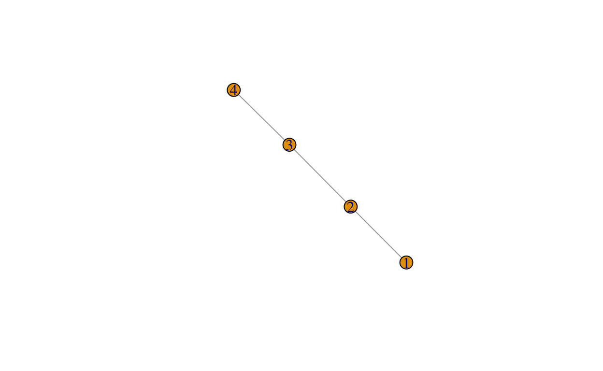
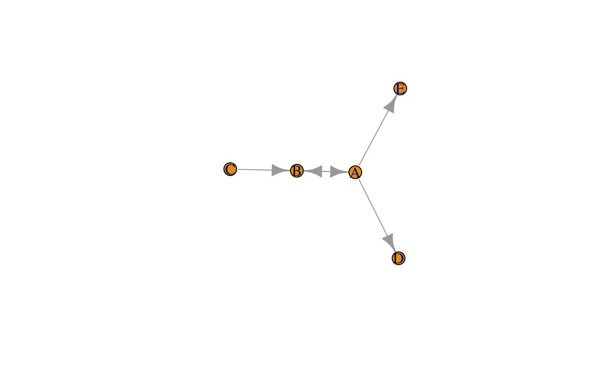
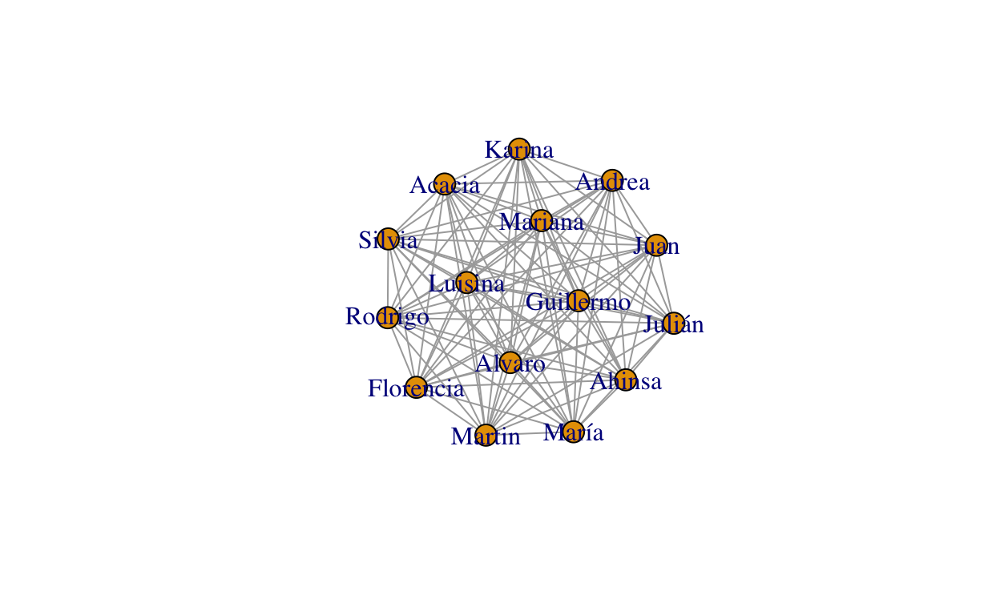
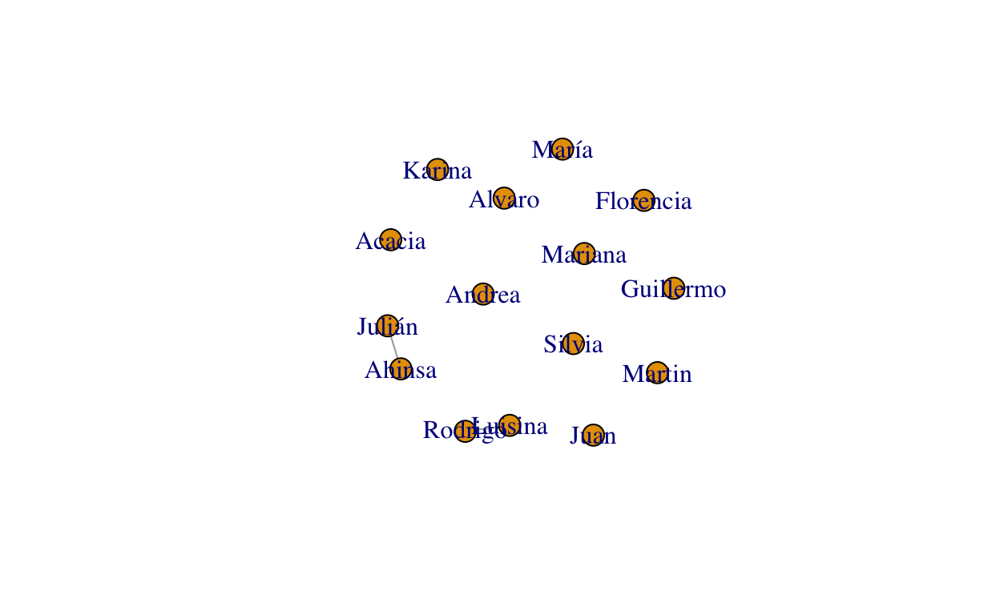
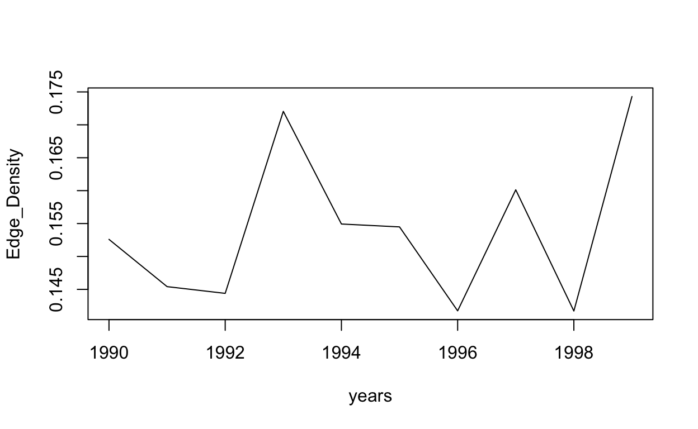
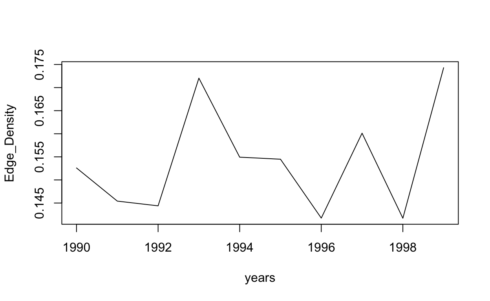

Introducción
Este documento sirve como guía para seguir los talleres del curso de Análisis de Redes Sociales, dictado en la Maestría en Economía de la Facultad de Ciencias Económicas y Administración de la UdelaR. El objetivo es, por un lado, brindar a los estudiantes las herramientas básicas para el manejo y análisis de datos relacionales, familiarizándose con algunas de las librerías más completas para ello. Por otra parte, el trabajo en el taller permitirá aplicar los conocimientos adquiridos en las sesiones teóricas mediante el cálculo de indicadores y la visualización de redes.
A lo largo del tutorial encontrarán secciones de código que podrán ejecutar directamente, en la consola de RStudio, o copiar en un script para realizar comentarios que les ayuden a re utilizar el código. Los resultados que deben obtener aparecerán, en muchos casos, a continuación del código. De esta forma sabrán si están reproduciéndolo de manera correcta, aunque en la visualización de las redes podrán haber diferencias menores debidas a la disposición aleatoria de los nodos. Además las salidas producidas por R aparecerán antecedidas de un doble numeral (“##”) de manera de que puedan diferenciar el código ejecutable de los resultados.
La siguiente sección ofrece una guía para la instalación de R y RStudio, luego de lo cual se presentan los materiales para los tres talleres del curso. En el primero se presentan las estructuras de datos más comunes para representar redes, para luego avanzar en el cálculo de algunas métricas y detectar comunidades. En el segundo taller abordaremos la problemática de pasar de redes bimodales a redes unimodales, matizando la interpretación de estas últimas. Para ello se presentan técnicas de Backbone Extraction (BBE) y luego se analiza la evolución dinámica de los indicadores de una red de copatentamiento.
Para instalar R y RStudio
Para instalar R deben ir a la página http://www.r-project.org/ y seleccionar CRAN en el menú de la izquierda. En esa ventana, deberán elegir un servidor cercano a su ubicación, aunque si el de Uruguay no funciona pueden usar otro. El link correcto dependerá del sistema operativo que usen, pero seguro será uno de los tres primeros link que aparecen en la sección “Download and Install R”, no es necesario que sigan más abajo de esta. Un vez allí deberán descargar el ejecutable según su sistema operativo. En el caso de usuarios OS X (Mac) deben buscar el archivo .pkg, si utilizan Windows el archivo correcto es un .exe al que llegan desde la opción “install R for the first time”. Muchas de las distribuciones de Linux tienen vienen con R. Por lo cual, si utilizan este sistema operativo, deberán verificar si ya está instalado o buscar la opción correcta dependiendo de su distribución. Una vez que hayan descargado el ejecutable, el proceso de instalación es el habitual para cualquier programa, seleccionando las opciones por defecto en todos los casos.
Para facilitar nuestro trabajo con R, utilizaremos un programa llamado RStudio. Este es un Entorno de Desarrollo Integrado (IDE por sus siglas en inglés) que nos facilita la experiencia con R. Para bajar RStudio, deben ir a https://www.rstudio.com/products/rstudio/download/ y seleccionar la opción gratuita (RStudio Desktop).
Durante los talleres utilizaremos algunas librerías que no vienen pre cargadas en R, por lo cual es conveniente que las instalen antes del taller, ya que para esto RStudio debe conectarse a internet y eso puede ser una restricción durante la clase. Para hacerlo solo tienen que ejecutar el código que se encuentra a continuación directamente desde la consola de RStudio, la cual aparecerá abajo a la izquierda cuando abran el programa.
install.packages("igraph")
Si no consiguen hacerlo no se preocupen porque podremos ocuparnos de esto en el primer taller. Esta instalación solo es necesaria la primera vez que se usa el paquete, luego solo deberán cargar la librería.
Pensando en quienes estén menos familiarizados con el manejo de R, en algunas partes de este documento se realizan comentarios sobre la sintaxis o algunas funciones básicas. Esto de ninguna manera busca ser una introducción completa a R, pero ayudará al manejo de la herramienta. A medida que avancemos en los talleres verán que este tipo de comentarios tenderán a desaparecer.
Guías y Manuales
En esta sección se incluirán algunas referencias a páginas y manuales que pueden ser de utilidad en el trabajo con redes, para estos talleres y más allá de ellos.
Librerías de R
igraphes la librería de referencia que utilizaremos en los talleres de la materia. El sitio oficial es https://igraph.org/r/ y el manual de funciones se puede descargar aquí: https://igraph.org/r/doc/igraph.pdf.- En las tareas asociadas a los talleres tendrán que utilizar funciones que no serán vistas durante la clase, para que se familiaricen con la documentación del paquete.
igraphdatacontiene bases de datos que permiten reproducir algunos ejercicios clásicos en el análisis de redes.dplyres parte de la familia de paquetestidyverse. Estos reúnen el conjunto más amplio de herramientas, del que se dispone enR, para el análisis y manipulación de datos. En su sitio (https://www.tidyverse.org/) es posible encontrar información sobre cada una de las librerías, así como también ayuda y tutoriales.- A lo largo de los talleres utilizaremos funciones del paquete
dplyr, aunque no haremos referencia expresa cuando lo hagamos.
- A lo largo de los talleres utilizaremos funciones del paquete
backbonees un paquete recientemente creado (Domagalski, Neal, & Sagan, 2019), que ofrece distintas alternativas para realizar proyecciones unimodales a partir de redes bipartitas.- En Neal (2014) se presentan los fundamentos estadísticos y algunas aplicaciones. Además se puede visitar el sitio de uno de sus autores (https://www.zacharyneal.com/backbone), donde se amplían las referencias sobre el tema.
data.tablees una adaptación del paquetedata.frameque mejora el uso de memoria y permite realizar un conjunto de transformaciones en los datos dentro del propio objeto, utilizando una lógica similar a la del lenguajeSQL. Su sintaxis es muy similar a la dedata.frame, pero la estructura de los objetosdata.tablehace que daca variable (columna) sea guardada como una lista. Esta característica es especialmente importante a la hora de trabajar con grandes volúmenes de datos ya que, por ejemplo, es posible borrar variables sin tener que duplicar el objeto en memoria.- Existen varios tutoriales sobre este paquete, pero en este link (https://rdatatable.gitlab.io/data.table/index.html) puede acceder a las vignetas creadas por sus desarrolladores.
geospherees un paquete creado para realizar cálculos de trigonometría espacial sobre datos geográficos. No hay un sitio del paquete, pero en este link (https://cran.r-project.org/web/packages/geosphere/vignettes/geosphere.pdf) encontrarán introducción escrita por su desarrollador.
Taller 1
Es común comenzar los script de R con un preámbulo que cargue las librerías que utilizaremos, limpie las variables que puedan estar en el entorno de trabajo y defina el directorio en el que trabajaremos. En adelante, cuando hagamos referencia al preámbulo nos estaremos refiriendo a esta sección de código. En el caso de este primer taller, el preámbulo está dado por la sección de código que se presenta a continuación.
Para que este código funcione en su computadora deberán modificar el directorio de trabajo, ya que la ruta del ejemplo no les servirá. Esto lo pueden hacer en RStudio yendo a “Session -> Set Working Directory -> Choose Directory” donde deberán elegir, como directorio de trabajo, la carpeta donde hayan guardado los materiales del taller. Estos materiales los pueden descargar de la carpeta “Taller_1” que se encuentra en el EVA del curso.
En su consola, luego de ejecutar el código, debería aparecer algo similar a lo que se muestra a continuación.
Primeros pasos usando igraph
El operador <- asigna el resultado de una función a un objeto, de manera de que podamos acceder luego a él. Aquí creamos una red, no dirigida, con 4 nodos y tres vínculos.
ej_1 <- make_graph(c(1, 2, 2, 3, 3, 4), directed=FALSE)
Una forma de acceder a la ayuda de las funciones en R es ejecutando el siguiente código en la consola, haciendo que aparezca la documentación de la función en la ventana que está abajo a la derecha en RStudio.
?make_graph
Si quisieran conocer el código de la función la ejecutan sin paréntesis en la consola y obtienen:
make_graph
## function (edges, ..., n = max(edges), isolates = NULL, directed = TRUE,
## dir = directed, simplify = TRUE)
## {
## if (inherits(edges, "formula")) {
## if (!missing(n))
## stop("'n' should not be given for graph literals")
## if (!missing(isolates)) {
## stop("'isolates' should not be given for graph literals")
## }
## if (!missing(directed)) {
## stop("'directed' should not be given for graph literals")
## }
## mf <- as.list(match.call())[-1]
## mf[[1]] <- mf[[1]][[2]]
## graph_from_literal_i(mf)
## }
## else {
## if (!missing(simplify)) {
## stop("'simplify' should not be given for graph literals")
## }
## if (!missing(dir) && !missing(directed)) {
## stop("Only give one of 'dir' and 'directed'")
## }
## if (!missing(dir) && missing(directed))
## directed <- dir
## if (is.character(edges) && length(edges) == 1) {
## if (!missing(n))
## warning("'n' is ignored for the '", edges, "' graph")
## if (!missing(isolates)) {
## warning("'isolates' is ignored for the '", edges,
## "' graph")
## }
## if (!missing(directed)) {
## warning("'directed' is ignored for the '", edges,
## "' graph")
## }
## if (!missing(dir)) {
## warning("'dir' is ignored for the '", edges,
## "' graph")
## }
## if (length(list(...)))
## stop("Extra arguments in make_graph")
## make_famous_graph(edges)
## }
## else if (is.numeric(edges) || is.null(edges) || (is.logical(edges) &&
## length(edges) == 0)) {
## if (is.null(edges) || is.logical(edges))
## edges <- as.numeric(edges)
## if (!is.null(isolates)) {
## warning("'isolates' ignored for numeric edge list")
## }
## old_graph <- function(edges, n = max(edges), directed = TRUE) {
## on.exit(.Call(C_R_igraph_finalizer))
## .Call(C_R_igraph_create, as.numeric(edges) -
## 1, as.numeric(n), as.logical(directed))
## }
## args <- list(edges, ...)
## if (!missing(n))
## args <- c(args, list(n = n))
## if (!missing(directed))
## args <- c(args, list(directed = directed))
## do.call(old_graph, args)
## }
## else if (is.character(edges)) {
## if (!missing(n)) {
## warning("'n' is ignored for edge list with vertex names")
## }
## if (length(list(...)))
## stop("Extra arguments in make_graph")
## el <- matrix(edges, ncol = 2, byrow = TRUE)
## res <- graph_from_edgelist(el, directed = directed)
## if (!is.null(isolates)) {
## isolates <- as.character(isolates)
## res <- res + vertices(isolates)
## }
## res
## }
## else {
## stop("'edges' must be numeric or character")
## }
## }
## }
## <bytecode: 0x7fb039d4e330>
## <environment: namespace:igraph>Aquí se aprecia la ventaja del código abierto de R, ya que nos permite saber precisamente qué está haciendo la función y eventualmente modificarla.
El contenido del objeto que creamos lo podemos visualizar ejecutando su nombre en la consola.
ej_1
## IGRAPH 3e5da1d U--- 4 3 --
## + edges from 3e5da1d:
## [1] 1--2 2--3 3--4También usando la función summary
summary(ej_1)
## IGRAPH 3e5da1d U--- 4 3 --O mediante un gráfico.
plot(ej_1)
Otra forma de crear la misma red, pero en este caso los números son tomados como nombres de los nodos.
ej_1_1 <- graph.formula(1-2, 2-3, 3-4)
ej_1_1
## IGRAPH f10e583 UN-- 4 3 --
## + attr: name (v/c)
## + edges from f10e583 (vertex names):
## [1] 1--2 2--3 3--4plot(ej_1_1)

La disposición de los nodos cambia cada vez que realizamos el plot
La secuencia de nodos utilizada para ej_1 puede ser guardada primero en un vector, para luego usarlo en la creación del grafo. En este caso asignamos el resultado de la función c (concatenar) al objeto nodos, pero ahora indicamos que el grafo es dirigido.
nodos <- c(1, 2, 2, 3, 3, 4)
ej_2 <- make_graph(nodos, directed=TRUE)
plot(ej_2)
ej_2
## IGRAPH c434c7a D--- 4 3 --
## + edges from c434c7a:
## [1] 1->2 2->3 3->4Esto facilita la modificación del objeto, volviendo a usar la función concatenar.
ej_3 <- make_graph( c(nodos, 4,1), directed=TRUE)
plot(ej_3)
ej_3
## IGRAPH b680e8c D--- 4 4 --
## + edges from b680e8c:
## [1] 1->2 2->3 3->4 4->1Por último, podemos usar el formato de fórmula para enunciar nodos y vínculos.
ej_4 <- make_graph( ~ A -- B, B -- C:D -- E)
ej_5 <- make_graph( ~ A --+ B, B +-- C, A --+ D:E, B --+ A )
ej_4
## IGRAPH 52ae366 UN-- 5 5 --
## + attr: name (v/c)
## + edges from 52ae366 (vertex names):
## [1] A--B B--C B--D C--E D--Eej_5
## IGRAPH 412f775 DN-- 5 5 --
## + attr: name (v/c)
## + edges from 412f775 (vertex names):
## [1] A->B A->D A->E B->A C->Bplot(ej_4)
plot(ej_5)

Algunas funciones para conocer características de los objetos igraph
summary(ej_4)
## IGRAPH 52ae366 UN-- 5 5 --
## + attr: name (v/c)ecount(ej_4)
## [1] 5vcount(ej_4)
## [1] 5is.directed(ej_4)
## [1] FALSEsummary(ej_5)
## IGRAPH 412f775 DN-- 5 5 --
## + attr: name (v/c)ecount(ej_5)
## [1] 5vcount(ej_5)
## [1] 5is.directed(ej_5)
## [1] TRUELa red de estudiantes de ARS
En la práctica resulta poco común que debamos construir las redes ingresando los datos, sino que habitualmente tendremos una base de datos que querremos convertir en un objeto de igraph. En esta sección comenzaremos analizando un conjunto reducido de datos, para que se familiaricen con las estructuras más comunes, y luego pasaremos a trabajar con bases más grandes.
Para correr el siguiente código es importante que hayan establecido correctamente el directorio en el que están trabajando y que hayan descargado los materiales del taller allí. La primera línea carga una base de datos que contienen información sobre las materias de la Maestría en las que participan los estudiantes de ARS.
estudiantes_incidencia <- read.csv("estudiantes_incidencia.csv", row.names=1, sep=";") # Cargo la base de dos modos
estudiantes_incidencia # Muestro la base de dos modos
## ARS Seminario Des_Ec_Reg PE Des_Ec_LP
## Rodrigo 1 0 1 0 0
## Luisina 1 0 1 0 0
## Andrea 1 0 0 0 0
## María 1 0 0 1 0
## Acacia 1 0 0 0 0
## Alvaro 1 0 0 0 0
## Martin 1 0 0 0 0
## Florencia 1 0 0 0 0
## Ahinsa 1 1 0 0 1
## Julián 1 0 0 0 1
## Silvia 1 0 0 0 0
## Mariana 1 0 0 0 0
## Guillermo 1 0 0 0 0
## Karina 1 0 0 0 0
## Juan 1 0 0 0 0Las bases de datos de este tipo son conocidas como “Matrices de Incidencia” y permiten generar redes bipartitas (o de dos modos), mediante la función graph_from_incidence_matrix.
bipartita <- graph_from_incidence_matrix(estudiantes_incidencia)
plot(bipartita,
layout = layout_as_bipartite(bipartita)[,2:1],
vertex.size = 8,
vertex.label.dist = 5,
vertex.color = c("green","blue")[V(bipartita)$type+1],
vertex.label.degree = pi*V(bipartita)$type)
A partir de una matriz de incidencia podemos obtener una proyección de un solo modo, a la cual llamamos “Matriz de Adyacencia”
estudiantes_incidencia <- as.matrix(estudiantes_incidencia) # Convierto la base en una matriz
estudiantes_adjacencia <- estudiantes_incidencia %*% t(estudiantes_incidencia) # Transformo la base de dos modos a un modo
estudiantes_adjacencia # Muestro la base de un modo
## Rodrigo Luisina Andrea María Acacia Alvaro Martin Florencia
## Rodrigo 2 2 1 1 1 1 1 1
## Luisina 2 2 1 1 1 1 1 1
## Andrea 1 1 1 1 1 1 1 1
## María 1 1 1 2 1 1 1 1
## Acacia 1 1 1 1 1 1 1 1
## Alvaro 1 1 1 1 1 1 1 1
## Martin 1 1 1 1 1 1 1 1
## Florencia 1 1 1 1 1 1 1 1
## Ahinsa 1 1 1 1 1 1 1 1
## Julián 1 1 1 1 1 1 1 1
## Silvia 1 1 1 1 1 1 1 1
## Mariana 1 1 1 1 1 1 1 1
## Guillermo 1 1 1 1 1 1 1 1
## Karina 1 1 1 1 1 1 1 1
## Juan 1 1 1 1 1 1 1 1
## Ahinsa Julián Silvia Mariana Guillermo Karina Juan
## Rodrigo 1 1 1 1 1 1 1
## Luisina 1 1 1 1 1 1 1
## Andrea 1 1 1 1 1 1 1
## María 1 1 1 1 1 1 1
## Acacia 1 1 1 1 1 1 1
## Alvaro 1 1 1 1 1 1 1
## Martin 1 1 1 1 1 1 1
## Florencia 1 1 1 1 1 1 1
## Ahinsa 3 2 1 1 1 1 1
## Julián 2 2 1 1 1 1 1
## Silvia 1 1 1 1 1 1 1
## Mariana 1 1 1 1 1 1 1
## Guillermo 1 1 1 1 1 1 1
## Karina 1 1 1 1 1 1 1
## Juan 1 1 1 1 1 1 1Usando la función graph_from_adjacency_matrix obtenemos la red de un modo que establece un vínculo entre cada uno de los estudiantes que comparte, al menos, una materia. En nuestro caso obtenemos un grafo conectado porque todos participan en ARS, por lo tanto todos comparten una materia.
un_modo <- graph_from_adjacency_matrix(estudiantes_adjacencia)
un_modo
## IGRAPH 780e115 DN-- 15 235 --
## + attr: name (v/c)
## + edges from 780e115 (vertex names):
## [1] Rodrigo->Rodrigo Rodrigo->Rodrigo Rodrigo->Luisina
## [4] Rodrigo->Luisina Rodrigo->Andrea Rodrigo->María
## [7] Rodrigo->Acacia Rodrigo->Alvaro Rodrigo->Martin
## [10] Rodrigo->Florencia Rodrigo->Ahinsa Rodrigo->Julián
## [13] Rodrigo->Silvia Rodrigo->Mariana Rodrigo->Guillermo
## [16] Rodrigo->Karina Rodrigo->Juan Luisina->Rodrigo
## [19] Luisina->Rodrigo Luisina->Luisina Luisina->Luisina
## [22] Luisina->Andrea Luisina->María Luisina->Acacia
## + ... omitted several edgesplot(un_modo)
La visualización anterior no parece la más conveniente para describir el tipo de fenómeno que estamos analizando, ya que le asigna un sentido a los vínculos y considera los vínculos de un nodo consigo mismo. Además, todos los vínculos de nuestra red tienen la misma ponderación, pese a que algunos estudiantes comparten más de una materia, ya que permite la presencia de múltiples link entre dos nodos. Esto se debe a que nuestra matriz de adyacencia es simétrica (lo cual hace que haya la misma cantidad de vínculos en ambos sentidos) y en la diagonal principal muestra el número de materias de cada estudiante (generando los loops). Por su parte, a menos que indiquemos lo contrario, igraph suele generar grafos sin ponderaciones. Verifiquemos estas afirmaciones.
is.directed(un_modo) # Devuelve TRUE si el grafo es dirigido
## [1] TRUElength(which(which_loop(un_modo) == TRUE)) # Contamos los loops (¿porqué hay mas loop que nodos?)
## [1] 21is_weighted(un_modo) # Devuelve TRUE si la red tiene ponderaciones
## [1] FALSEisSymmetric(estudiantes_adjacencia) # Devuelve TRUE si la matriz es simétrica
## [1] TRUEdiag(estudiantes_adjacencia)
## Rodrigo Luisina Andrea María Acacia Alvaro Martin
## 2 2 1 2 1 1 1
## Florencia Ahinsa Julián Silvia Mariana Guillermo Karina
## 1 3 2 1 1 1 1
## Juan
## 1Todo esto lo podemos resolver directamente al generar el objeto igraph de la siguiente manera.
un_modo_simple <- graph_from_adjacency_matrix(estudiantes_adjacencia, mode = "undirected", diag = FALSE, weighted = TRUE)
un_modo_simple
## IGRAPH a7ae8d6 UNW- 15 105 --
## + attr: name (v/c), weight (e/n)
## + edges from a7ae8d6 (vertex names):
## [1] Rodrigo--Luisina Rodrigo--Andrea Rodrigo--María
## [4] Rodrigo--Acacia Rodrigo--Alvaro Rodrigo--Martin
## [7] Rodrigo--Florencia Rodrigo--Ahinsa Rodrigo--Julián
## [10] Rodrigo--Silvia Rodrigo--Mariana Rodrigo--Guillermo
## [13] Rodrigo--Karina Rodrigo--Juan Luisina--Andrea
## [16] Luisina--María Luisina--Acacia Luisina--Alvaro
## [19] Luisina--Martin Luisina--Florencia Luisina--Ahinsa
## [22] Luisina--Julián Luisina--Silvia Luisina--Mariana
## + ... omitted several edgesis.directed(un_modo_simple)
## [1] FALSElength(which(which_loop(un_modo_simple) == TRUE))
## [1] 0is_weighted(un_modo_simple)
## [1] TRUEplot(un_modo_simple)

Esto mejora la capacidad de la red para mostrar la estructura de vínculos, pero persiste el problema de que nos muestra a todos los estudiantes conectados debido a que pertenecen a ARS. Si bien esto es cierto, podría resultar más claro ver únicamente los vínculos que tienen fuera de ARS. Para ello, en la primera línea del código, le restamos 1 a toda la matriz estudiantes_adjacencia de forma de eliminar los vínculos entre todos los estudiantes que se generan por pertenecer a ARS.
estudiantes_adjacencia_noARS <- estudiantes_adjacencia - 1 # La flexibilidad de R a la hora de operar con matrices permite hacer cosas como esta, por ello hay que tener mucho cuidado al aplicar algebra matricial en R
un_modo_simple_noARS <- graph_from_adjacency_matrix(estudiantes_adjacencia_noARS, mode = "undirected", diag = FALSE, weighted = TRUE)
un_modo_simple_noARS
## IGRAPH fbc106b UNW- 15 2 --
## + attr: name (v/c), weight (e/n)
## + edges from fbc106b (vertex names):
## [1] Rodrigo--Luisina Ahinsa --Juliánplot(un_modo_simple_noARS)

Esta visualización nos ayuda a ver rápidamente que las coincidencias en materias, fuera de ARS, son pocas.
Borramos los objetos que tenemos en nuestro entorno de trabajo.
Redes de comercio
En esta parte del taller utilizaremos un conjunto de objetos guardados en formato .RData que permite almacenar estructuras construidas utilizando librerías de R, las cuales no necesariamente pueden ser leídas por otros paquetes (a diferencia de los que pasa con los .csv, por ejemplo). Antes de construir los objetos igraph observaremos algunas características de nuestros datos que, por la magnitud de la base, sería difícil de observar directamente.
load("itn_tech_2010.RData")
El objeto MA_itn_HT_2010 es una matriz de adyacencia que muestra el comercio internacional, en el sector “High Tech” para el año 2010, medido en millones de dólares. El vector latam_names permite seleccionar países de Latinoamérica.
Las dimensiones de la matriz se pueden consultar de esta forma.
dim(MA_itn_HT_2010)
## [1] 105 105Podemos verificar si esta matriz puede dar lugar a una red dirigida, o al menos si hacerlo puede tener sentido, para lo cual no debería ser simétrica.
isSymmetric.matrix(MA_itn_HT_2010)
## [1] FALSEEsta característica hace que podamos construir una red dirigida, mostrando el comercio binacional para cada par de países, o una red no dirigida al considerar el balance comercial entre cada par de países.
Sabemos que no deberían existir loops, ya que un país no debería tener comercio internacional consigo mismo. Esto lo podemos ver sumando los valores de la diagonal principal.
Las importaciones por país son:
rowSums(MA_itn_HT_2010)
## Algeria Azerbaijan
## 5.998348e+04 3.718842e+04
## Argentina Australia
## 1.822473e+06 7.953283e+06
## Austria Bahamas
## 1.983153e+07 1.570446e+04
## Bahrain Armenia
## 1.077196e+05 2.221273e+04
## Barbados Belgium-Luxembourg
## 8.688693e+04 4.846460e+07
## Bermuda Bolivia
## 1.000468e+04 2.272904e+04
## Bosnia Herzegovina Brazil
## 6.695232e+04 9.958703e+06
## Bulgaria Belarus
## 1.513919e+06 4.976127e+05
## Cambodia Canada
## 1.498588e+04 3.478919e+07
## Cayman Isds Sri Lanka
## 4.045434e+04 1.031467e+05
## Chile China
## 4.427617e+05 5.300874e+08
## Colombia Costa Rica
## 7.899720e+05 1.121637e+07
## Croatia Cyprus
## 1.185278e+06 1.063881e+06
## Czech Rep. Denmark
## 1.974122e+07 1.937814e+07
## Dominican Rep. Ecuador
## 1.066743e+06 2.639462e+05
## El Salvador Estonia
## 4.172731e+05 1.729376e+06
## Finland France
## 1.155233e+07 1.331549e+08
## Georgia Germany
## 8.775561e+04 2.199415e+08
## Ghana Gibraltar
## 1.999992e+04 9.707186e+03
## Greece Guatemala
## 2.220381e+06 2.225355e+05
## China Hong Kong SAR Hungary
## 2.680917e+07 2.294290e+07
## Iceland Indonesia
## 3.524670e+05 9.066841e+06
## Ireland Israel
## 8.637517e+07 2.003809e+07
## Italy Japan
## 5.058949e+07 1.609522e+08
## Kazakhstan Jordan
## 1.721831e+05 6.365605e+05
## Kenya Rep. of Korea
## 1.032382e+05 1.074761e+08
## Kuwait Kyrgyzstan
## 8.162474e+04 1.525759e+04
## Lebanon Latvia
## 3.434119e+05 7.087576e+05
## Lithuania China Macao SAR
## 8.034124e+05 1.058320e+05
## Malaysia Malta
## 8.791198e+07 2.467649e+06
## Mauritius Mexico
## 8.735901e+04 5.816872e+07
## Other Asia nes Monaco
## 1.536950e+08 0.000000e+00
## Rep. of Moldova Morocco
## 8.770593e+04 1.375189e+06
## Oman Netherlands
## 1.385778e+05 7.685211e+07
## New Zealand Nicaragua
## 1.177607e+06 1.148801e+04
## Nigeria Norway
## 1.111734e+05 6.955925e+06
## Pakistan Panama
## 5.864526e+05 2.634928e+06
## Papua New Guinea Peru
## 2.237606e+04 1.013467e+05
## Philippines Poland
## 4.271741e+07 1.192616e+07
## Portugal Qatar
## 2.664479e+06 2.102596e+05
## Romania Russian Federation
## 5.347741e+06 4.288732e+06
## Saudi Arabia India
## 8.717792e+05 2.086201e+07
## Singapore Slovakia
## 1.049102e+08 3.558499e+06
## Viet Nam Slovenia
## 5.351291e+06 3.163240e+06
## So. African Customs Union Zimbabwe
## 1.445344e+06 1.152994e+04
## Spain Sweden
## 2.712342e+07 2.913920e+07
## Switzerland Thailand
## 7.505535e+07 4.864608e+07
## United Arab Emirates Turkey
## 2.879118e+06 2.242511e+06
## Uganda Ukraine
## 9.641147e+04 1.724751e+06
## TFYR of Macedonia Egypt
## 8.361465e+04 3.657715e+05
## United Kingdom USA
## 9.804187e+07 3.292535e+08
## Uruguay Uzbekistan
## 1.680845e+05 2.864312e+04
## Venezuela
## 1.371535e+05Las exportaciones por país:
colSums(MA_itn_HT_2010)
## Algeria Azerbaijan
## 5454508.43 1297789.61
## Argentina Australia
## 9618412.53 37405581.11
## Austria Bahamas
## 20892315.15 318025.94
## Bahrain Armenia
## 1696797.12 375648.81
## Barbados Belgium-Luxembourg
## 177893.54 76273574.88
## Bermuda Bolivia
## 136859.41 566716.66
## Bosnia Herzegovina Brazil
## 661389.05 34122049.19
## Bulgaria Belarus
## 2897667.55 2205749.37
## Cambodia Canada
## 460774.29 62312776.01
## Cayman Isds Sri Lanka
## 106975.15 925365.64
## Chile China
## 6337394.72 231485818.23
## Colombia Costa Rica
## 8353958.37 3501201.65
## Croatia Cyprus
## 2636713.15 1375750.50
## Czech Rep. Denmark
## 26701954.45 12857198.48
## Dominican Rep. Ecuador
## 1409462.16 2656322.60
## El Salvador Estonia
## 1017488.59 1843274.85
## Finland France
## 10131327.94 120719785.11
## Georgia Germany
## 557198.82 201088246.73
## Ghana Gibraltar
## 893547.58 55281.85
## Greece Guatemala
## 10608455.90 1474645.23
## China Hong Kong SAR Hungary
## 194285868.26 20304373.66
## Iceland Indonesia
## 554544.71 17910760.16
## Ireland Israel
## 19687922.08 10181475.84
## Italy Japan
## 76466244.79 118586471.72
## Kazakhstan Jordan
## 3811531.87 2143154.78
## Kenya Rep. of Korea
## 2153198.43 73399636.51
## Kuwait Kyrgyzstan
## 2544922.16 257839.78
## Lebanon Latvia
## 1886556.07 1463327.85
## Lithuania China Macao SAR
## 1924315.19 850373.31
## Malaysia Malta
## 49057072.85 1593425.56
## Mauritius Mexico
## 453362.02 59791453.44
## Other Asia nes Monaco
## 62463717.84 0.00
## Rep. of Moldova Morocco
## 451893.67 3691785.48
## Oman Netherlands
## 1770093.76 91503097.86
## New Zealand Nicaragua
## 4823967.73 621939.67
## Nigeria Norway
## 4142201.57 11056970.63
## Pakistan Panama
## 3610033.91 5651035.62
## Papua New Guinea Peru
## 328480.44 3231551.84
## Philippines Poland
## 21674007.52 24162043.85
## Portugal Qatar
## 9071194.21 3478118.84
## Romania Russian Federation
## 9705779.19 38426949.42
## Saudi Arabia India
## 17635127.97 35139782.34
## Singapore Slovakia
## 97774885.69 6564488.38
## Viet Nam Slovenia
## 10771011.58 3022329.06
## So. African Customs Union Zimbabwe
## 13995500.37 470908.71
## Spain Sweden
## 46802249.06 26110289.16
## Switzerland Thailand
## 41988512.25 30769566.64
## United Arab Emirates Turkey
## 22820889.85 23013007.28
## Uganda Ukraine
## 735867.14 5768859.18
## TFYR of Macedonia Egypt
## 550519.79 5699489.04
## United Kingdom USA
## 105842951.61 412818058.33
## Uruguay Uzbekistan
## 1029253.18 1266906.41
## Venezuela
## 8908162.09Volumen de comercio mundial:
Los países de Latinoamérica considerados serán:
latam_names
## [1] "Argentina" "Bolivia" "Brazil"
## [4] "Chile" "Colombia" "Costa Rica"
## [7] "Dominican Rep." "Ecuador" "El Salvador"
## [10] "Guatemala" "Mexico" "Nicaragua"
## [13] "Peru" "Uruguay" "Venezuela"A partir de esta matriz vamos a generar, en primer lugar, una red ponderada y dirigida para el comercio mundial. Además se obtiene el número de nodos y de vínculos, así como la densidad de la red construyendo el cálculo o utilizando la función edge_density.
g_dir_global <- graph_from_adjacency_matrix(MA_itn_HT_2010, mode = "directed", weighted = T)
summary(g_dir_global)
## IGRAPH 2943bde DNW- 105 8342 --
## + attr: name (v/c), weight (e/n)ecount(g_dir_global)
## [1] 8342vcount(g_dir_global)
## [1] 105## [1] 0.7639194edge_density(g_dir_global)
## [1] 0.7639194Ahora creamos la red de comercio, dirigida y ponderada, entre los países de Latinoamérica y analizamos las mismas propiedades que en el caso anterior.
g_dir_latam <- induced_subgraph(g_dir_global, vids = which(V(g_dir_global)$name %in% latam_names))
summary(g_dir_latam)
## IGRAPH e482d72 DNW- 15 205 --
## + attr: name (v/c), weight (e/n)ecount(g_dir_latam)
## [1] 205vcount(g_dir_latam)
## [1] 15## [1] 0.9761905edge_density(g_dir_latam)
## [1] 0.9761905Lo que hicimos fue obtener un sub grafo, mediante la función induced_subgraph, indicando que conserve únicamente los nodos cuyo nombre esté en el vector latam_names. El comando which(V(g_dir_global)$name %in% latam_names) pregunta cuáles de los objetos del vector de nombres (V(g_dir_global)$name) cumplen la condición de estar en (%in%) el vector de nombre de países latinoamericanos (latam_names). Concretamente:
Nuestra red de comercio latinoamericano se ve de esta forma:
plot(g_dir_latam, vertex.size = 10, edge.arrow.size = 0.5)
La alta densidad de esta red se debe a que estamos considerando los vínculos comerciales entre los países, sin importar su volumen. Una alternativa podría ser que solo se consideren los vínculos que representen más de un determinado porcentaje de las importaciones o exportaciones de cada país. En el siguiente ejemplo consideramos un porcentaje del 5%, para lo cual expresamos el grafo g_dir_latam como una matriz de adyacencia y luego dejamos en cero los intercambios que quedan por debajo del límite establecido.
MA_latam <- as.matrix(as_adjacency_matrix(g_dir_latam, type = "both", attr = "weight"))
MA_principales_latam <- MA_latam
minimo <- 0.05
for(i in 1:length(latam_names)) {
export <- sum(MA_latam[, i]) # Estas son las exportaciones del pais i
import <- sum(MA_latam[i, ]) # idem para import
for(j in 1:length(latam_names)) {
if(export*minimo >= MA_latam[j, i]) {
MA_principales_latam[j, i] <- 0
}
if(import*minimo >= MA_latam[i, j]) {
MA_principales_latam[i, j] <- 0
}
}
}
Con la matriz MA_principales_latam podemos generar el nuevo grafo, que representa las principales relaciones comerciales, según el criterio establecido.
principales_latam_2010_ht <- graph_from_adjacency_matrix(MA_principales_latam, mode = "directed", weighted = T)
summary(principales_latam_2010_ht)
## IGRAPH a9c2bf7 DNW- 15 33 --
## + attr: name (v/c), weight (e/n)degree(principales_latam_2010_ht)
## Argentina Bolivia Brazil Chile
## 8 1 10 6
## Colombia Costa Rica Dominican Rep. Ecuador
## 6 4 0 4
## El Salvador Guatemala Mexico Nicaragua
## 4 4 9 2
## Peru Uruguay Venezuela
## 3 1 4Vemos que al hacer esto tenemos un nodo (Dominican Rep.) con grado cero, por lo cual lo eliminamos para analizar únicamente a los países que mantienen algún vínculo en base al criterio definido. Luego se plantean dos visualizaciones distintas del grafo.
principales_latam_2010_ht <- delete_vertices(principales_latam_2010_ht, V(principales_latam_2010_ht)[name = "Dominican Rep."])
plot(principales_latam_2010_ht, layout = layout_in_circle(principales_latam_2010_ht))
plot(principales_latam_2010_ht, layout = layout_with_dh(principales_latam_2010_ht))

El grafo resultante presenta las siguientes características:
is.simple(principales_latam_2010_ht) # Busca la presencia del loops y múltiples vínculos entre nodos.
## [1] TRUEdegree(principales_latam_2010_ht, mode = "total") # Nos da un vector con el grado de cada nodo, sin considerar la direccion del vinculo.
## Argentina Bolivia Brazil Chile Colombia
## 8 1 10 6 6
## Costa Rica Ecuador El Salvador Guatemala Mexico
## 4 4 4 4 9
## Nicaragua Peru Uruguay Venezuela
## 2 3 1 4degree(principales_latam_2010_ht, mode = "in") # Nos da un vector con el grado de cada nodo, considerando solo los vínculos de entrada.
## Argentina Bolivia Brazil Chile Colombia
## 2 1 4 3 2
## Costa Rica Ecuador El Salvador Guatemala Mexico
## 2 3 2 1 3
## Nicaragua Peru Uruguay Venezuela
## 2 3 1 4degree(principales_latam_2010_ht, mode = "out") # Nos da un vector con el grado de cada nodo, considerando solo los vínculos de salida.
## Argentina Bolivia Brazil Chile Colombia
## 6 0 6 3 4
## Costa Rica Ecuador El Salvador Guatemala Mexico
## 2 1 2 3 6
## Nicaragua Peru Uruguay Venezuela
## 0 0 0 0degree_distribution(principales_latam_2010_ht) # Nos da la frecuencia relativa de los grados que se encuentran en la red, yendo desde el cero al máximo grado encontrado.
## [1] 0.00000000 0.14285714 0.07142857 0.07142857 0.35714286 0.00000000
## [7] 0.14285714 0.00000000 0.07142857 0.07142857 0.07142857is.connected(principales_latam_2010_ht) # Decimos que un grafo esta concetado si cualquier nodo se puede alcanzar desde cualquier otro.
## [1] TRUESi quisiéramos calcular indicadores para algún país en particular, como por ejemplo Uruguay, podríamos hacer lo siguiente:
## Uruguay
## 0## Uruguay
## 1alpha_centrality(principales_latam_2010_ht, nodes = V(principales_latam_2010_ht)[name = "Uruguay"])
## Uruguay
## 0.85416La función degree calcula el grado del nodo, de entrada o salida según lo que indiquemos en el parámetro mode. Por su parte la función alpha_centrality calcula un indicador de centralidad propuesto por Bonacich & Lloyd (2001), en el cual la relevancia de un nodo crece con la relevancia de los nodos que se vinculan a él. Esta medida permite, a diferencia del eigen_centrality (Bonacich, 1987) controlar por características del nodo que no dependen de sus vínculos. La documentación de esta función la pueden consultar ver en el cuadrante inferior derecho de RStudio con el siguiente comando:
?alpha_centrality
Ahora creamos un grafo no dirigido, para poder utilizar el algoritmo fastgreedy.community de detección de comunidad. Para ello existen distintas alternativas para definir lo que se hace con las ponderaciones de los vínculos. En este caso se sumarán los vínculos para obtener una medida del comercio binacional entre los países.
undir_prin_latam_2010_ht <- as.undirected(principales_latam_2010_ht, mode = "collapse", edge.attr.comb = list(weight="sum"))
is.simple(undir_prin_latam_2010_ht)
## [1] TRUEdegree(undir_prin_latam_2010_ht)
## Argentina Bolivia Brazil Chile Colombia
## 6 1 7 6 5
## Costa Rica Ecuador El Salvador Guatemala Mexico
## 4 4 3 3 7
## Nicaragua Peru Uruguay Venezuela
## 2 3 1 4degree_distribution(undir_prin_latam_2010_ht)
## [1] 0.00000000 0.14285714 0.07142857 0.21428571 0.21428571 0.07142857
## [7] 0.14285714 0.14285714is.connected(undir_prin_latam_2010_ht)
## [1] TRUEAhora detectamos las comunidades mediante la función fastgreedy.community. Esta aplica el algoritmo propuesto por Clauset, Newman, & Moore (2004), el cual busca la distribución de comunidades que optimiza la modularidad de la red, considerando el número de vínculos internos externos de cada sub grafo.
latam_itn_comm <- fastgreedy.community(undir_prin_latam_2010_ht)
length(latam_itn_comm)
## [1] 4sizes(latam_itn_comm)
## Community sizes
## 1 2 3 4
## 5 3 2 4membership(latam_itn_comm)
## Argentina Bolivia Brazil Chile Colombia
## 1 1 1 1 4
## Costa Rica Ecuador El Salvador Guatemala Mexico
## 4 3 2 2 4
## Nicaragua Peru Uruguay Venezuela
## 2 4 1 3plot(latam_itn_comm, undir_prin_latam_2010_ht, layout = layout_with_lgl)
Otra forma de visualizar el análisis de cluster que realiza este algoritmo es mediante este gráfico:
dendPlot(latam_itn_comm, mode="phylo")
Finalmente generamos un atributo de cada país que indica la comunidad a la que pertenece y luego transformamos nuestro grafo en una nueva base de datos con los nombres de los países y sus comunidades.
latam_itn_comm$membership # Este es el vector que usaremos
## [1] 1 1 1 1 4 4 3 2 2 4 2 4 1 3V(undir_prin_latam_2010_ht)$comm <- latam_itn_comm$membership
latam_com <- as_data_frame(undir_prin_latam_2010_ht, what = "vertices")
latam_com
## name comm
## Argentina Argentina 1
## Bolivia Bolivia 1
## Brazil Brazil 1
## Chile Chile 1
## Colombia Colombia 4
## Costa Rica Costa Rica 4
## Ecuador Ecuador 3
## El Salvador El Salvador 2
## Guatemala Guatemala 2
## Mexico Mexico 4
## Nicaragua Nicaragua 2
## Peru Peru 4
## Uruguay Uruguay 1
## Venezuela Venezuela 3Taller 2
Comenzamos con el preámbulo, donde deben modificar la ruta al directorio de trabajo. Recuerden que esto lo pueden hacer mediante el menú, como se explicó en el Taller 1. En este caso utilizaremos dos librerías nuevas, por lo cual deben recordar instalarlas antes de cargarlas. La librería
install.packages("dplyr")
install.packages("backbone")
Luego de instalarlas si podemos cargarlas.
A continuación impartamos los materiales que utilizaremos en este taller.
## inventor_location_country_out inventor_location_country_in
## Length:16054 Length:16054
## Class :character Class :character
## Mode :character Mode :character
##
##
##
## patent_id application_year
## Length:16054 Min. :1990
## Class :character 1st Qu.:1994
## Mode :character Median :1996
## Mean :1995
## 3rd Qu.:1998
## Max. :1999latam
## [1] "AR" "BO" "BR" "CL" "CO" "CR" "CU" "EC" "SV" "GT" "HN" "MX" "NI"
## [14] "PA" "PY" "PE" "DO" "UY" "VE"Los datos que utilizaremos son una muestra de patentes registradas en la USTPO (https://www.uspto.gov/), a las cuales se puede acceder por medio de la plataforma PatentsView (https://www.patentsview.org/download/). Una de las características que hacen interesante a esta plataforma es que ofrece bases de datos sobre patentes donde los agentes participantes han sido deslenguados mediante procesos estadísticos. Esto, en el caso de los inventores, permite contar con un identificador único para aquellos que aparezcan referidos de distintas maneras en sus patentes. Este es un problema central, en algunas aplicaciones, para el uso de bases de datos de patentes ya que el registro no implica que el inventor ingrese un identificador permanente.
En este taller tomaremos como objeto de análisis a los países de Latinoamérica, aunque haremos un foco especial en las características macro de la red que incluye a estos y a los países con los que colaboran para patentar. Por esto, la condición para que una patente sea incluida en nuestra muestra es que en ella haya participado, al menos, un inventor de la región. Para acotar el trabajo en el taller se utilizarán datos entre 1990 y 1999, reservando el período entre 2000 y 2015 para la tarea individual. Estos datos son parte de los utilizados en un proyecto de investigación del IECON (Bianchi, Galaso, & Palomeque, 2020), cuyo documento de trabajo puede ser descargado en este link: https://ideas.repec.org/p/ulr/wpaper/dt-04-20.html.
El objeto df_inv_pat_90_99 tiene una estructura que puede ser interpretada como una “edge list” por sus dos primeras columnas, ya que cada fila representa un vinculo entre inventores de dos países que participaron en una misma patente. La designación “in” y “out” en cada columna no tiene una interpretación práctica en este caso ya que no nos interesa establecer un sentido en el vínculo. El vector latam será usado para identificar a un conjunto de países de Latinoamérica.
Red general
A continuación comenzamos por crear una red donde cada patente representa un vínculo entre dos países, por lo cual tendremos un grafo con múltiples links entre cada par de nodos.
g_total <- graph_from_data_frame(df_inv_pat_90_99, directed = F)
summary(g_total)
## IGRAPH 229fa59 UN-- 129 16054 --
## + attr: name (v/c), patent_id (e/c), application_year (e/n)Esta forma de construir la red tiene la ventaja de que podemos contar con información de cada patente, como atributos de sus vínculos, pero dificulta el análisis de las propiedades topológicas al presentar múltiples links. Por ello se simplifica el grafo de forma que solo exista un vínculo entre cada par de nodos, y este tenga una ponderación igual al número de patentes compartidas.
E(g_total)$weight <- 1
g_total <- simplify(g_total, edge.attr.comb = list(weight = "sum", "ignore"))
summary(g_total)
## IGRAPH 6e54317 UNW- 129 1206 --
## + attr: name (v/c), weight (e/n)Como podemos apreciar, la cantidad de vínculos disminuye considerablemente, aunque ahora solo tenemos un atributo para los vínculos. A continuación vamos a agregar un atributo que nos permita identificar si el país es de la región o no. Luego de esto generamos una visualización que identifica, en verde, a estos países en la región y permite apreciar que la mayoría se encuentran en lo que podría ser el “core” de una red de tipo “Centro-Periferia” (en el visualizador de RStudio se ve mejor).
V(g_total)$is_latam <- if_else(V(g_total)$name %in% latam, 1, 0)
plot(g_total,
vertex.size = 5,
vertex.frame.color = "black",
vertex.label.color = "black",
vertex.label.cex = NA,
vertex.label.dist = 1,
vertex.label = if_else((V(g_total)$is_latam) == 1, V(g_total)$name, ""),
vertex.color = c("green","grey")[if_else((V(g_total)$is_latam) == 1, 1, 2)],
edge.width = 0.8
)
Backbone extraction
La red que hemos creado establece un entre cada par de nacionalidades de inventores que hayan participado en una patente. Si nuestro interés está en conocer las relaciones de colaboración internacional de los países de la región, lo que estamos asumiendo es que la existencia de una sola patente que cumpla con esta condición es suficiente para decir que dos países colaboran. Eventualmente podríamos utilizar las ponderaciones de los vínculos como criterio para eliminar algunos, como hicimos en el taller anterior. Esa alternativa sería arbitraria y no aprovecharía la información de la que disponemos sobre el patentamiento, en términos relativos entre países.
Para abordar esta dificultad utilizaremos el paquete backbone que nos permite explorar distintas alternativas para determinar qué vínculos son estadísticamente significativos y cuáles no. En particular en este taller se utilizará un enfoque que determine si la cantidad de patentes entre dos países es estadísticamente distinto de un proceso aleatorio condicionado a la cantidad de patentes de cada país. Para ello se seguirá el abordaje “Agent-degree conditioned threshold”, según la clasificación propuesta por Neal (2014), donde se muestra que la probabilidad de que dos actores (países en nuestro caso) colaboren en un número preciso de patentes en un proceso aleatorio, condicionado a que se mantenga el número total de patentes de ambos actores, sigue una distribución hipergeométrica. Esta probabilidad se puede calcular de la siguiente manera:
\[Pr(P_{i,j} = x) = \dfrac{{A \choose x} {A - x \choose D_i - x}{A - D_i \choose D_j - x}}{{A - x \choose D_i }{A - x \choose D_j }} = \dfrac{{D_i \choose x}{A - D_i \choose D_j - x}}{{A \choose D_j}}\]
Donde \(x\) es el número de patentes entre un par de países, \(A\) el total de patentes entre todos los países, \(D_i\) y \(D_j\) son las patentes en las que participan \(i\) y \(j\) respectivamente. Esto nos permite determinar (a un nivel \(\alpha\)) que la cantidad de patentes \(x\) es estadísticamente significativa cuando:
\[\left( \sum_{min(D_i, D_j)}^{x = P_{i,j}}Pr(P_{i,j}=x)\right) < \alpha\]
Esta estrategia estadística implica la realización de un gran número de test, uno para cada par de países, por lo cual se debe considerar el “Family-wise error rate”. Para controlar este efecto Holm (1979) realizar un ajuste al nivel de significación de la prueba. Para ello si tenemos \(H_1 ... H_m\) hipótesis nulas con sus correspondientes \(P_1 ... P_m\) p-valores, ordenados de forma creciente, este filtro identifica el mínimo p-valor que cumple \(P_k > \dfrac{\alpha}{m+1-k}\) y rechaza las hipótesis \(H_1...H_{k-1}\).
Para hacer esto debemos generar, a partir de nuestros datos, la lista de vínculos de una red bipartita. Esto lo hacemos de la siguiente manera.
el <- rbind(as.matrix(df_inv_pat_90_99[, c(1,3)]), as.matrix(df_inv_pat_90_99[, c(2,3)]))
el <- unique(el)
dim(el)
## [1] 15996 2Luego utilizamos la función hyperg para calcular los p-valores que surgen de nuestros datos.
hyperg_B <- hyperg(el)
hyperg_B$summary
## Model Summary
## Input Class edgelist
## Model Hypergeometric Model
## Number of Rows 129
## Mean of Row Sums 124
## SD of Row Sums 360.49634
## Skew of Row Sums 4.7643
## Number of Columns 6110
## Mean of Column Sums 2.618
## SD of Column Sums 1.00956
## Skew of Column Sums 2.27612
## Running Time (secs) 0.06n_distinct(el[,1])
## [1] 129n_distinct(df_inv_pat_90_99$patent_id)
## [1] 6110Utilizando estas probabilidades podemos construir una lista de vínculos, de la red unimodal, que conserve solamente las interacciones estadísticamente significativas.
hyperg_el_holm <- backbone.extract(hyperg_B, signed = F, alpha = .05, fwer = "holm", narrative = T)
hyperg_g_holm <- graph_from_data_frame(hyperg_el_holm[,1:2], directed = F) %>% simplify()
El parámetro signed es útil si estamos analizando una red, por ejemplo, de amistades y enemistades. Ya que permite crear vínculos positivos y negativos. En nuestro caso esto no es necesario. Además, la red debe ser simplificada (simplify) ya que por defecto backbone.extract nos da una matriz dirigida (que en este caso es simétrica). El parámetro narrative es el que genera la explicación que vemos en la consola.
Ahora agregamos el atributo que identifica a los países de la región y realizamos una representación gráfica de la red.
V(hyperg_g_holm)$is_latam <- if_else(V(hyperg_g_holm)$name %in% latam, 1, 0)
plot(hyperg_g_holm,
vertex.size = 5,
vertex.frame.color = "black",
vertex.label.color = "black",
vertex.label.cex = NA,
vertex.label.dist = 1,
vertex.label = if_else((V(hyperg_g_holm)$is_latam) == 1, V(hyperg_g_holm)$name, ""),
vertex.color = c("green","grey")[if_else((V(hyperg_g_holm)$is_latam) == 1, 1, 2)],
edge.width = 0.8
)
Evolución dinámica de la red general
En esta sección trabajaremos con la red total, pero el procedimiento sería análogo si quisiéramos trabajar con la red obtenida mediante backbone.extract. Para esto empezaremos por crear una lista que contenga a las redes por año.
years <- sort(unique(df_inv_pat_90_99$application_year))
inv_pat <- list()
for (i in 1:length(years)) {
this_year <- df_inv_pat_90_99[which(df_inv_pat_90_99$application_year == years[i]),]
g <- graph_from_data_frame(this_year, directed = F)
E(g)$weight <- 1
g <- simplify(g, edge.attr.comb = list(weight = "sum", "ignore"))
V(g)$is_latam <- if_else(V(g)$name %in% latam, 1, 0)
inv_pat[[paste("y", years[i], sep = "_")]] <- g
}
De esta manera podremos trabajar con la red de cada año de una manera sencilla. Para verlo exploremos el objeto que hemos creado.
inv_pat
## $y_1990
## IGRAPH 1b0f134 UNW- 56 235 --
## + attr: name (v/c), is_latam (v/n), weight (e/n)
## + edges from 1b0f134 (vertex names):
## [1] DE--JP DE--BR DE--MX DE--CH DE--IT DE--FR DE--SG DE--US DE--BE
## [10] DE--AR DE--PE DE--CI DE--AT DE--CZ DE--CL DE--CN DE--BO DE--CO
## [19] DE--NL DE--KR DE--CU DE--EC DE--SR DE--SE DE--ID DE--IN DE--CD
## [28] DE--NI DE--NG JP--BR JP--MX JP--FR JP--SG JP--VE JP--GB JP--US
## [37] JP--AR JP--PE JP--CI JP--CN JP--BO JP--CO JP--CA JP--KR JP--CU
## [46] JP--EC JP--ES JP--ID JP--IN JP--CD JP--RU JP--GH JP--AF JP--KM
## [55] JP--NG JP--BH JP--GN JP--SY BR--MX BR--CH BR--IT BR--FR BR--SG
## [64] BR--GB BR--US BR--BE BR--AR BR--CI BR--AT BR--CZ BR--CL BR--CN
## + ... omitted several edges
##
## $y_1991
## IGRAPH 39f7ec9 UNW- 63 284 --
## + attr: name (v/c), is_latam (v/n), weight (e/n)
## + edges from 39f7ec9 (vertex names):
## [1] BR--JP BR--SG BR--FR BR--MX BR--BE BR--DE BR--CH BR--CZ BR--US
## [10] BR--IT BR--DK BR--CA BR--HN BR--GB BR--ZA BR--CL BR--NL BR--AT
## [19] BR--SK BR--SD BR--AU BR--SE JP--SG JP--MX JP--DE JP--CH JP--US
## [28] JP--HU JP--AR JP--EC JP--CO JP--VE JP--BO JP--BH JP--PK JP--PE
## [37] JP--TW JP--CL JP--CI JP--IR JP--ID JP--DO JP--SN JP--AU JP--KR
## [46] JP--CD JP--MY JP--NG JP--KM JP--GH JP--AF JP--TR JP--UG JP--TH
## [55] SG--FR SG--MX SG--BE SG--DE SG--CH SG--US SG--AR SG--CA SG--BH
## [64] SG--DO SG--AU SG--MY SG--GH FR--MX FR--BE FR--DE FR--CH FR--US
## + ... omitted several edges
##
## $y_1992
## IGRAPH ffc248d UNW- 63 282 --
## + attr: name (v/c), is_latam (v/n), weight (e/n)
## + edges from ffc248d (vertex names):
## [1] CO--JP CO--US CO--IT CO--DE CO--BR CO--AR CO--FR CO--CA CO--VE
## [10] CO--GB CO--CH CO--JM JP--US JP--IT JP--DE JP--BR JP--AR JP--CA
## [19] JP--MX JP--VE JP--TW JP--CU JP--BO JP--GB JP--KR JP--PE JP--CN
## [28] JP--SG JP--EC JP--CH JP--IN JP--RU JP--SO JP--KM JP--BH JP--LK
## [37] JP--NG JP--KP JP--AO BE--DO BE--US BE--DE BE--BR BE--FR BE--MX
## [46] BE--VE BE--AT BE--CL BE--CZ BE--CH DO--US DO--IT DO--FR DO--MX
## [55] DO--VE DO--ES DO--BO DO--CH US--IT US--DE US--BR US--AR US--CD
## [64] US--FR US--CA US--MX US--VE US--AT US--TW US--ES US--CU US--BO
## + ... omitted several edges
##
## $y_1993
## IGRAPH 68ee2c7 UNW- 63 336 --
## + attr: name (v/c), is_latam (v/n), weight (e/n)
## + edges from 68ee2c7 (vertex names):
## [1] BR--IT BR--US BR--JP BR--SG BR--DE BR--CA BR--AT BR--FR BR--AR
## [10] BR--ZA BR--AL BR--CL BR--CH BR--NO BR--SE BR--DK BR--BE BR--AO
## [19] BR--RU BR--PL BR--VE BR--GB BR--VN BR--AU BR--ES BR--CZ BR--CN
## [28] BR--NL BR--HK BR--IN BR--GH BR--BG IT--US IT--JP IT--SG IT--DE
## [37] IT--FR IT--CO IT--CU IT--HU IT--AR IT--DO IT--AO IT--EC IT--ES
## [46] IT--IL IT--IN IT--PA IT--BG US--MX US--JP US--SG US--DE US--CA
## [55] US--AT US--FR US--CO US--CU US--HU US--AR US--BO US--ZA US--DO
## [64] US--CL US--CH US--NO US--PG US--SE US--DK US--BE US--IR US--RU
## + ... omitted several edges
##
## $y_1994
## IGRAPH 4d0c0c0 UNW- 72 396 --
## + attr: name (v/c), is_latam (v/n), weight (e/n)
## + edges from 4d0c0c0 (vertex names):
## [1] CN--BO CN--JP CN--BR CN--US CN--DE CN--SG CN--MX CN--EC CN--CA
## [10] CN--KR CN--AU CN--ID CN--TW BO--JP BO--US BO--DE BO--ZA BO--AR
## [19] BO--IT BO--FR BO--CO BO--MX BO--BE BO--AT BO--ID BO--TW JP--BR
## [28] JP--US JP--DE JP--CR JP--AR JP--VN JP--GB JP--CO JP--SG JP--CU
## [37] JP--MX JP--EC JP--RU JP--CA JP--KM JP--BF JP--IR JP--AO JP--ZM
## [46] JP--IE JP--PY JP--IN JP--CD JP--CL JP--GN JP--BH JP--KR JP--AU
## [55] JP--ID JP--PE JP--NG JP--DK JP--CF JP--GH JP--BJ BR--US BR--DE
## [64] BR--ZA BR--AR BR--CH BR--IT BR--GB BR--VE BR--FR BR--CO BR--SG
## + ... omitted several edges
##
## $y_1995
## IGRAPH 13ed859 UNW- 73 406 --
## + attr: name (v/c), is_latam (v/n), weight (e/n)
## + edges from 13ed859 (vertex names):
## [1] US--TW US--IT US--JP US--AR US--ID US--SG US--SE US--KM US--BF
## [10] US--DE US--MX US--VE US--CO US--BR US--FR US--GB US--CA US--GY
## [19] US--IE US--AU US--BO US--CZ US--CR US--CH US--CU US--BE US--IN
## [28] US--CN US--IL US--ES US--GH US--NL US--EC US--DK US--NO US--MY
## [37] US--BH US--VN US--DO US--MZ US--PE US--NG US--JM US--PG US--RU
## [46] US--AT US--PA US--CL US--HK US--KR US--HN US--FI US--LB US--PR
## [55] US--AZ US--NZ US--BS US--GT TW--JP TW--AR TW--DE TW--CO TW--BR
## [64] TW--GB TW--BO TW--CN TW--CD TW--DO TW--GW IT--AR IT--SG IT--DE
## + ... omitted several edges
##
## $y_1996
## IGRAPH c6b5a10 UNW- 85 506 --
## + attr: name (v/c), is_latam (v/n), weight (e/n)
## + edges from c6b5a10 (vertex names):
## [1] CA--MX CA--AR CA--US CA--SG CA--GB CA--BE CA--BR CA--FR CA--JP
## [10] CA--CO CA--DO CA--DE CA--AU CA--CN CA--TW CA--EC CA--AT CA--ES
## [19] CA--NL CA--CH CA--CL CA--GT CA--RU CA--TR CA--HK CA--UA MX--VE
## [28] MX--AR MX--US MX--HN MX--IT MX--SG MX--GB MX--BE MX--FR MX--JP
## [37] MX--CO MX--DO MX--DE MX--AU MX--SE MX--CN MX--IL MX--ID MX--AT
## [46] MX--ES MX--BO MX--GH MX--CU MX--NL MX--IN MX--CH MX--ZA MX--CL
## [55] MX--RU MX--TR MX--BD MX--RS MX--UA VE--AR VE--US VE--HN VE--IT
## [64] VE--FR VE--JP VE--CO VE--DO VE--BO VE--GH VE--CL VE--PA AR--US
## + ... omitted several edges
##
## $y_1997
## IGRAPH 378e318 UNW- 80 506 --
## + attr: name (v/c), is_latam (v/n), weight (e/n)
## + edges from 378e318 (vertex names):
## [1] FR--BR FR--IT FR--TW FR--CO FR--JP FR--AR FR--VE FR--DE FR--BE
## [10] FR--MX FR--CA FR--CN FR--HK FR--MY FR--US FR--SG FR--DO FR--CH
## [19] FR--BO FR--AT FR--GB FR--CU FR--ES FR--SE FR--EC FR--CL FR--PE
## [28] FR--AE FR--GR FR--SD FR--IE BR--IT BR--TW BR--JP BR--AR BR--VE
## [37] BR--DE BR--BE BR--MX BR--CA BR--CN BR--MY BR--US BR--SG BR--CH
## [46] BR--AT BR--GB BR--IN BR--IL BR--HU BR--RU BR--NL BR--ES BR--SE
## [55] BR--GH BR--TZ BR--KR BR--DK BR--PS BR--AU BR--TR BR--ER BR--PH
## [64] BR--SD BR--BY BR--NG BR--EE BR--AO BR--IE IT--CO IT--AR IT--DE
## + ... omitted several edges
##
## $y_1998
## IGRAPH 477dccb UNW- 84 494 --
## + attr: name (v/c), is_latam (v/n), weight (e/n)
## + edges from 477dccb (vertex names):
## [1] US--JP US--SG US--IT US--VE US--BE US--BR US--IN US--CN US--CH
## [10] US--SV US--DK US--CO US--AR US--DE US--TW US--AT US--MX US--CU
## [19] US--CZ US--SK US--PE US--GB US--CL US--ZA US--UG US--BO US--RU
## [28] US--AZ US--FR US--TR US--AF US--SE US--CA US--ID US--KR US--IL
## [37] US--CR US--AU US--ES US--HN US--NL US--NO US--HU US--UA US--PS
## [46] US--MY US--SY US--DO US--NZ US--SA US--EC US--TZ US--IE US--GR
## [55] US--GH US--HK US--PA US--PR US--GT US--AE US--BW JP--SG JP--IT
## [64] JP--VE JP--BE JP--BR JP--IN JP--CN JP--CH JP--DK JP--CO JP--AR
## + ... omitted several edges
##
## $y_1999
## IGRAPH cf7160d UNW- 77 510 --
## + attr: name (v/c), is_latam (v/n), weight (e/n)
## + edges from cf7160d (vertex names):
## [1] US--BE US--IT US--AR US--MX US--TW US--CN US--HK US--SG US--DK
## [10] US--CZ US--NL US--SK US--ID US--DE US--JP US--BR US--CH US--VE
## [19] US--BO US--CL US--GB US--SA US--PE US--CO US--HN US--FR US--IN
## [28] US--CR US--FI US--SE US--BF US--CA US--DO US--CU US--ES US--IL
## [37] US--MY US--PS US--KR US--UY US--RU US--QA US--AU US--BH US--BB
## [46] US--AT US--GH US--EE US--EC US--NO US--HU US--AO US--NZ US--UG
## [55] US--BY US--GT US--TZ US--JM US--GR US--PR BE--IT BE--AR BE--MX
## [64] BE--TW BE--SG BE--NL BE--DE BE--JP BE--BR BE--VE BE--BO BE--CL
## + ... omitted several edgessummary(inv_pat)
## Length Class Mode
## y_1990 10 igraph list
## y_1991 10 igraph list
## y_1992 10 igraph list
## y_1993 10 igraph list
## y_1994 10 igraph list
## y_1995 10 igraph list
## y_1996 10 igraph list
## y_1997 10 igraph list
## y_1998 10 igraph list
## y_1999 10 igraph listinv_pat[[1]]
## IGRAPH 1b0f134 UNW- 56 235 --
## + attr: name (v/c), is_latam (v/n), weight (e/n)
## + edges from 1b0f134 (vertex names):
## [1] DE--JP DE--BR DE--MX DE--CH DE--IT DE--FR DE--SG DE--US DE--BE
## [10] DE--AR DE--PE DE--CI DE--AT DE--CZ DE--CL DE--CN DE--BO DE--CO
## [19] DE--NL DE--KR DE--CU DE--EC DE--SR DE--SE DE--ID DE--IN DE--CD
## [28] DE--NI DE--NG JP--BR JP--MX JP--FR JP--SG JP--VE JP--GB JP--US
## [37] JP--AR JP--PE JP--CI JP--CN JP--BO JP--CO JP--CA JP--KR JP--CU
## [46] JP--EC JP--ES JP--ID JP--IN JP--CD JP--RU JP--GH JP--AF JP--KM
## [55] JP--NG JP--BH JP--GN JP--SY BR--MX BR--CH BR--IT BR--FR BR--SG
## [64] BR--GB BR--US BR--BE BR--AR BR--CI BR--AT BR--CZ BR--CL BR--CN
## + ... omitted several edgesinv_pat[["y_1990"]]
## IGRAPH 1b0f134 UNW- 56 235 --
## + attr: name (v/c), is_latam (v/n), weight (e/n)
## + edges from 1b0f134 (vertex names):
## [1] DE--JP DE--BR DE--MX DE--CH DE--IT DE--FR DE--SG DE--US DE--BE
## [10] DE--AR DE--PE DE--CI DE--AT DE--CZ DE--CL DE--CN DE--BO DE--CO
## [19] DE--NL DE--KR DE--CU DE--EC DE--SR DE--SE DE--ID DE--IN DE--CD
## [28] DE--NI DE--NG JP--BR JP--MX JP--FR JP--SG JP--VE JP--GB JP--US
## [37] JP--AR JP--PE JP--CI JP--CN JP--BO JP--CO JP--CA JP--KR JP--CU
## [46] JP--EC JP--ES JP--ID JP--IN JP--CD JP--RU JP--GH JP--AF JP--KM
## [55] JP--NG JP--BH JP--GN JP--SY BR--MX BR--CH BR--IT BR--FR BR--SG
## [64] BR--GB BR--US BR--BE BR--AR BR--CI BR--AT BR--CZ BR--CL BR--CN
## + ... omitted several edgesinv_pat$y_1990
## IGRAPH 1b0f134 UNW- 56 235 --
## + attr: name (v/c), is_latam (v/n), weight (e/n)
## + edges from 1b0f134 (vertex names):
## [1] DE--JP DE--BR DE--MX DE--CH DE--IT DE--FR DE--SG DE--US DE--BE
## [10] DE--AR DE--PE DE--CI DE--AT DE--CZ DE--CL DE--CN DE--BO DE--CO
## [19] DE--NL DE--KR DE--CU DE--EC DE--SR DE--SE DE--ID DE--IN DE--CD
## [28] DE--NI DE--NG JP--BR JP--MX JP--FR JP--SG JP--VE JP--GB JP--US
## [37] JP--AR JP--PE JP--CI JP--CN JP--BO JP--CO JP--CA JP--KR JP--CU
## [46] JP--EC JP--ES JP--ID JP--IN JP--CD JP--RU JP--GH JP--AF JP--KM
## [55] JP--NG JP--BH JP--GN JP--SY BR--MX BR--CH BR--IT BR--FR BR--SG
## [64] BR--GB BR--US BR--BE BR--AR BR--CI BR--AT BR--CZ BR--CL BR--CN
## + ... omitted several edgesvcount(inv_pat[[1]])
## [1] 56También tenemos la posibilidad de trabajar con cada objeto igrpah de forma recursiva.
for (i in 1:length(inv_pat)) {
print(years[i])
print(vcount(inv_pat[[i]]))
print(ecount(inv_pat[[i]]))
}
## [1] 1990
## [1] 56
## [1] 235
## [1] 1991
## [1] 63
## [1] 284
## [1] 1992
## [1] 63
## [1] 282
## [1] 1993
## [1] 63
## [1] 336
## [1] 1994
## [1] 72
## [1] 396
## [1] 1995
## [1] 73
## [1] 406
## [1] 1996
## [1] 85
## [1] 506
## [1] 1997
## [1] 80
## [1] 506
## [1] 1998
## [1] 84
## [1] 494
## [1] 1999
## [1] 77
## [1] 510Esta última característica es especialmente útil para analizar la evolución de la estructura de la red, a lo largo del tiempo. Para hacerlo crearemos una matriz donde guardaremos cada indicador para cada año.
El objeto BD_indicadores es una matriz cuyas filas tienen como nombre los años que estamos analizando. Es importante convertir “character” al objeto years, ya que esto me permite usarlo para referenciar las filas. Los nombres de las columnas vienen dados por el vector indicadores, en el cual podemos agregar las nuevas variables que queramos calcular, o sustituir las existentes. El valor inicial de todos los campos de esta matriz es cero, los cuales son modificados en el siguiente código.
for (i in 1:length(years)) {
BD_indicadores[years[i], "Countries"] <- vcount(inv_pat[[i]])
BD_indicadores[years[i], "Colaborations"] <- ecount(inv_pat[[i]])
BD_indicadores[years[i], "Mean_Degree"] <- mean(degree(inv_pat[[i]]))
BD_indicadores[years[i], "SD_Degree"] <- sd(degree(inv_pat[[i]]))
BD_indicadores[years[i], "Components"] <- count_components(inv_pat[[i]])
BD_indicadores[years[i], "Transitivity"] <- transitivity(inv_pat[[i]], type = c("global"))
BD_indicadores[years[i], "Assortativity"] <- assortativity(inv_pat[[i]], types1 = V(inv_pat[[i]])$is_latam, directed = F)
BD_indicadores[years[i], "Edge_Density"] <- edge_density(inv_pat[[i]])
}
La evolución de estos indicadores la podemos analizar visualmente en RStudio observando los valores, o de forma gráfica utilizando una estructura recursiva.
for (i in 1:length(indicadores)) {
plot(years, BD_indicadores[,i], type = "l", ylab = colnames(BD_indicadores)[i])
}

 

Al comienzo del taller planteamos que la red, para todo el período, parecía seguir una estructura de “Centro-Periferia”. Este tipo de redes son comunes en la literatura vinculada a la innovación, como ya fue señalado al presentarla en las clases teóricas. Allí también se dijo que una forma de analizar que una red siga una estructura de este tipo es analizando si la distribución de grado sigue una “Ley de Potencia”. En general, siguiendo a Newman (2005), podemos decir que una cierta frecuencia sigue una Ley de Potencia cuando al aplicar logaritmo la misma puede ser aproximada mediante una función lineal. Esto implica que si tenemos \(f(x)=y=cx^{ -\alpha } \Rightarrow log(y) = log(c) - \alpha log(x)\) en general es posible dejar de lado el análisis de \(log(c)\) y estimar, en este caso por el método de Máxima Verosimilitud, el valor de \(\alpha\) para poder concluir acerca de si la frecuencia estudiada sigue efectivamente una Ley de Potencia. Para esto utilizaremos la función fit_power_law, la cual permite estimar este parámetro y aplicar el test de Kolmogorov-Smirnov, siguiendo a Clauset, Shalizi, & Newman (2009), para obtener un p-valor que nos permita decidir sobre la significación del parámetro \(\alpha\) y, por tanto, sobre la hipótesis de que la distribución de grado sigue una ley de potencia. Este tipo de distribuciones, también conocidas como libres de escala, tienen serias dificultades para ser estimadas. Por ello este procedimiento debe ser considerado como exploratorio y sirve, a los efectos de este taller, como una primera aproximación a la identificación de estructuras particulares en las redes.
resultados <- c("alpha", "p_v_KS")
PL_resultados <- matrix(0, nrow = length(years), ncol = length(resultados), dimnames = list(years, resultados))
for (i in 1:length(inv_pat)) {
PL_resultados[years[i], "alpha"] <- fit_power_law(degree_distribution(inv_pat[[i]]), implementation = "plfit")$alpha
PL_resultados[years[i], "p_v_KS"] <- fit_power_law(degree_distribution(inv_pat[[i]]), implementation = "plfit")$KS.p
}
plot(years, PL_resultados[,1], type = "l", ylab = colnames(PL_resultados)[1])
Nuestros resultados muestran evidencia a favor de la existencia de una “Ley de Potencia” en la distribución de grado de los nodos de nuestra red, ya que la hipótesis nula es que los datos siguen una distribución de este tipo y los valores del p-valor de Kolmogorov-Smirnov no permiten rechazar dicha hipótesis.
Bonus Track
Algo sobre herramientas de visualización dinámica.
install.packages("intergraph")
install.packages("networkDynamic")
install.packages("ndtv")
Redes totales
library(intergraph)
library(networkDynamic)
library(ndtv)
Dyn_inv_pat <- list()
years <- as.numeric(years)
for (i in 1:length(years)) {
Dyn_inv_pat[[i]] <- asNetwork(inv_pat[[i]])
}
DynNet_inv_pat <- networkDynamic(network.list = Dyn_inv_pat, vertex.pid = "vertex.names", create.TEAs = T, start = years[1])
## Onsets and termini not specified, assuming each network in network.list should have a discrete spell of length 1
## Dynamic attributes (TEAs) will be created for the following attributes of the networks on network.list:
## Vertices: is_latam
## Edges: weight
## Argument base.net not specified, using first element of network.list instead
## Initialized network of size 129 inferred from number of unique vertex.pids
## Created net.obs.period to describe network
## Network observation period info:
## Number of observation spells: 1
## Maximal time range observed: 1990 until 2000
## Temporal mode: discrete
## Time unit: step
## Suggested time increment: 1render.d3movie(DynNet_inv_pat, output.mode = 'htmlWidget',
vertex.cex = 2,
vertex.lwd = 0.2,
vertex.col="is_latam")
## slice parameters:
## start:1990
## end:2000
## interval:1
## aggregate.dur:1
## rule:latesttimeline(DynNet_inv_pat,
plot.edge.spells=FALSE)

Redes con BBE
hyper_inv_pat <- list()
for (i in 1:length(years)) {
this_year <- df_inv_pat_90_99[which(df_inv_pat_90_99$application_year == years[i]),]
el <- rbind(as.matrix(this_year[, c(1,3)]), as.matrix(this_year[, c(2,3)]))
el <- unique(el)
hyperg_B <- hyperg(el)
hyperg_el_holm <- backbone.extract(hyperg_B, signed = F, alpha = .05, fwer = "holm")
g <- graph_from_data_frame(hyperg_el_holm[,1:2], directed = F) %>% simplify()
V(g)$is_latam <- if_else(V(g)$name %in% latam, 1, 0)
hyper_inv_pat[[paste("y", years[i], sep = "_")]] <- g
}
Dyn_hyper_inv_pat <- list()
for (i in 1:length(years)) {
Dyn_hyper_inv_pat[[i]] <- asNetwork(hyper_inv_pat[[i]])
}
DynNet_hyper_inv_pat <- networkDynamic(network.list = Dyn_hyper_inv_pat, vertex.pid = "vertex.names", create.TEAs = T, start = years[1])
## Onsets and termini not specified, assuming each network in network.list should have a discrete spell of length 1
## Dynamic attributes (TEAs) will be created for the following attributes of the networks on network.list:
## Vertices: is_latam
## Argument base.net not specified, using first element of network.list instead
## Initialized network of size 48 inferred from number of unique vertex.pids
## Created net.obs.period to describe network
## Network observation period info:
## Number of observation spells: 1
## Maximal time range observed: 1990 until 2000
## Temporal mode: discrete
## Time unit: step
## Suggested time increment: 1render.d3movie(DynNet_hyper_inv_pat, output.mode = 'htmlWidget',
vertex.cex = 2,
displaylabels=TRUE,
vertex.lwd = 0.2,
vertex.col="is_latam")
## slice parameters:
## start:1990
## end:2000
## interval:1
## aggregate.dur:1
## rule:latesttimeline(DynNet_hyper_inv_pat,
plot.edge.spells=FALSE)
Taller 3
Comenzamos con el preámbulo, donde deben modificar la ruta al directorio de trabajo. Recuerden que esto lo pueden hacer mediante el menú, como se explicó en el Taller 1. En este caso utilizaremos dos librerías nuevas, por lo cual deben recordar instalarlas antes de cargarlas. La librería
install.packages("data.table")
install.packages("geosphere")
Luego de instalarlas podemos cargarlas.
A continuación impartamos los materiales que utilizaremos en este taller.
load("cities_t3.RData")
El objeto cities_t3 tiene información sobre patentes, aplicadas entre 1980 y 1999, seleccionadas de la base de la plataforma PatentsView (https://www.patentsview.org/download/), siguiendo el criterio que se explicó en el Taller 2. Pero en este caso la base tiene una estructura que no ha sido procesada para que sirva para la construcción de redes de forma directa. Las variables que aparecen son: - city_id: Es un identificador construido por nosotros para diferenciar ciudades, corrigiendo algunos problemas que aparecen en la base original. - El nivel administrativo al que se toma cada ciudad puede variar entre países, según el grado de desagregación disponible, pero esta información no se presenta en la base. - application_year: es el año de aplicación de la patente, la cual sabemos que fue aprobada pero no utilizamos la información sobre cuándo lo fue. - ass_city_id: Es un identificador del propietario de la patente, adaptado por nosotros para asegurarnos de que cada uno de estos identificadores corresponda solo con una ciudad. - lat: Latitud asignada por Google Maps a la ciudad. - lon: Longitud asignada por Google Maps a la ciudad. - ass_is_latam: Indica si el propietario, y por tanto la ciudad, es latinoamericano. - country: Código ISO2 del país. - patent_id: Identificador de la patente. - inventor_id: Identificador del inventor (distinto del propietario)
Como pueden ver (View(cities_t3)) esta estructura presenta algunas dificultades ya que para cada patente se utilizan tantas filas como el producto de los inventores y propietarios de esta. Este tipo de bases de datos (relacionales) son muy comunes y tienen la ventaja de permitirnos recuperar características de la patente, el inventor o el propietario, desde otras bases que utilicen el mismo identificador. Por ello, en este taller, uno de los objetivos será transformar esta base en una estructura que nos permita construir redes.
Nuestro objeto de estudio serán las ciudades y sus vínculos de copatentamiento. Para esto deberemos comenzar creando una red de propietarios (red micro), de la cual pasaremos a una de ciudades al agregar a todos los propietarios de una misma ciudad (red meso). Con nuestros datos podríamos construir directamente la red de ciudades, pero construir la de propietarios nos permitirá obtener métricas de esta que luego sean atributos de las ciudades. Además trabajaremos con ventanas temporales y utilizaremos geolocalización para generar un atributo de los vínculos que indique la distancia geográfica entre las ciudades.
Análisis para una ventana
La construcción de la red, para cada período, la haremos por medio de un for que repita el procedimiento seguido para la primera ventana. Solo por razones expositivas construiremos la primera ventana de forma independiente, de forma de poder explicar lo que hacemos en cada paso.
Trabajaremos con ventanas de dos años, por lo cual la primera abarcará desde 1980 a 1981. En el siguiente código realizamos un recorte a la base original para trabajar solo con la primera ventana.
Ahora transformaremos estos datos para poder construir las redes, para lo cual comenzamos creando un vector, llamado componentes, que contiene el nombre de la variable donde están los nodos y el de la que indica el objeto que establece los vínculos. En este caso comenzaremos generando una red cuyos nodos son los propietarios (ass_city_id) y los vínculos los generan las patentes (patent_id). Esta forma de plantear el código tiene la ventaja de hacerlo re utilizable, ya que con cambiar las variables del vector componentes podemos construir redes de otro tipo.
componentes <- c("ass_city_id", "patent_id")
temporal <- unique(subset.data.frame(ass_city_db, select = componentes))
colnames(temporal) <- c("nodo", "link")
edList <- temporal %>%
group_by(link) %>%
filter(n()>=2) %>%
group_by(link) %>%
do(data.frame(t(combn(.$nodo, 2)), stringsAsFactors=FALSE)) %>%
as.data.table
edList <- setNames(subset.data.frame(edList, select = c("X1", "X2", "link")), c(paste(componentes[1], "out", sep = "_"), paste(componentes[1], "in", sep = "_"), componentes[2]))
Antes de crear la red de propietarios, voy a generar una base con los atributos de los que dispongo para cada nodo, de manera de poder cargarlos todos al momento de crear la red.
Ahora si creamos la red, con los atributos de los nodos. Debemos simplificarla porque aparecerá un vínculo por cada patente pero, a diferencia de lo que hicimos en el taller anterior, no ponderaremos el vínculo.
net_ass_link_pat <- graph_from_data_frame(edList, directed = FALSE, vertices = att_ass) %>% simplify()
summary(net_ass_link_pat)
## IGRAPH 1b64af8 UN-- 227 857 --
## + attr: name (v/c), country (v/c), city_id (v/c), lat (v/n),
## | lon (v/n), ass_is_latam (v/n)Ahora generaremos una base con atributos de las ciudades, a la cual le agregaremos una métrica de red que surja del análisis de la red de propietarios de la ciudad.
att_cities <- ass_city_db %>%
group_by(city_id) %>%
summarise(n_ass = n_distinct(ass_city_id),
n_pat = n_distinct(patent_id),
n_inv = n_distinct(inventor_id)) %>%
as.data.table
cities <- att_cities$city_id
att_cities$meanDass <- 0
for (j in 1:length(cities)) {
att_cities[city_id == cities[j], "meanDass"] <- mean(igraph::degree(net_ass_link_pat, v = V(net_ass_link_pat)[city_id == cities[j]]))
}
Ahora vamos a crear la red de ciudades utilizando el mismo procedimiento que para la de propietarios.
componentes <- c("city_id", "patent_id")
temporal <- unique(subset.data.frame(ass_city_db, select = componentes))
colnames(temporal) <- c("nodo", "link")
edList <- temporal %>%
group_by(link) %>%
filter(n()>=2) %>%
group_by(link) %>%
do(data.frame(t(combn(.$nodo, 2)), stringsAsFactors=FALSE)) %>%
as.data.table
edList <- setNames(subset.data.frame(edList, select = c("X1", "X2", "link")), c(paste(componentes[1], "out", sep = "_"), paste(componentes[1], "in", sep = "_"), componentes[2]))
att_ass <- unique(att_ass[,-1])
att_cities <- merge(att_cities, att_ass, by = "city_id")
net_city_link_pat <- graph_from_data_frame(edList, directed = FALSE, vertices = att_cities) %>% simplify()
summary(net_city_link_pat)
## IGRAPH 9b0b92b UN-- 176 844 --
## + attr: name (v/c), n_ass (v/n), n_pat (v/n), n_inv (v/n),
## | meanDass (v/n), country (v/c), lat (v/n), lon (v/n),
## | ass_is_latam (v/n)En general nos hemos concentrado en generar atributos para los nodos, ya que estos suelen ser el objeto de investigación. Pero en este caso vamos a generar un atributo del vínculo que mida la distancia geográfica (geodésica para ser más preciso) entre las ciudades (nodos). Esto nos permitirá considerar esta dimensión para caracterizar el tipo de relaciones que establece la ciudad.
distancias <- as.data.frame(ends(net_city_link_pat, E(net_city_link_pat)))
colnames(distancias) <- c("salida", "llegada")
distancias$id_edge <- 1:length(distancias$salida)
geo_data <- as.data.table(igraph::as_data_frame(net_city_link_pat, what = "vertices")[, c("name", "lon", "lat")])
distancias <- merge(distancias, geo_data, by.x = "llegada", by.y = "name")
distancias <- merge(distancias, geo_data, by.x = "salida", by.y = "name")
distancias$distance <- round(distGeo(distancias[, c("lon.y", "lat.y")], distancias[, c("lon.x", "lat.x")])/1000, 2)
distancias <- arrange(distancias, id_edge)
E(net_city_link_pat)$distance <- distancias$distance
summary(net_city_link_pat)
## IGRAPH 9b0b92b UN-- 176 844 --
## + attr: name (v/c), n_ass (v/n), n_pat (v/n), n_inv (v/n),
## | meanDass (v/n), country (v/c), lat (v/n), lon (v/n),
## | ass_is_latam (v/n), distance (e/n)Ahora utilizaremos este atributo para construir dos variables que nos brinden información de la distancia a la que se encuentran las ciudades con las que se vincula cada ciudad. Para ello consideraremos la media y el desvío estándar de la distancia de los vínculos.
for (j in 1:vcount(net_city_link_pat)) {
V(net_city_link_pat)$meanDist[j] <- if_else(is.na(mean(incident(net_city_link_pat, v = V(net_city_link_pat)$name[j])$distance)) == TRUE, 0, mean(incident(net_city_link_pat, v = V(net_city_link_pat)$name[j])$distance))
V(net_city_link_pat)$sdDist[j] <- if_else(is.na(sd(incident(net_city_link_pat, v = V(net_city_link_pat)$name[j])$distance)) == TRUE, 0, sd(incident(net_city_link_pat, v = V(net_city_link_pat)$name[j])$distance))
}
Eventualmente también nos podría interesar tener alguna otra medida de resumen sobre las características de las ciudades con las que se vincula cada ciudad. En este caso contaremos con cuantas ciudades de Latinoamérica se vincula cada ciudad. Para hacerlo, dentro del for, crearemos un grafo con los con los las ciudades que se vinculan a cada ciudad. A esto se le suele llamar “egonetwork”, donde el “ego” es la ciudad que estoy analizando. En este enfoque se considera el vecindario de grado 1, o mayor, del “ego” y se construye una red sin él.
Por último, vamos a generar un atributo común para todas las ciudades, pero variable en el tiempo. Esto puede ser relevante para analizar si los cambios en la antropología de la red afectan el desempeño de los nodos. En concreto vamos a calcular el grado de homofilia según la pertenencia de las ciudades a Latinoamérica o no.
V(net_city_link_pat)$assort_is_latam <- assortativity.nominal(net_city_link_pat, types = (V(net_city_link_pat)$ass_is_latam + 1), directed = F)
De este proceso obtenemos una base de datos de corte transversal, ya que aún no incluimos los períodos, que tiene las siguientes características.
att_cities <- igraph::as_data_frame(net_city_link_pat, what = "vertices")
Análisis para todas las ventanas
En esta sección reproduciremos las etapas anteriores, pero las incluiremos en un for que las repita para cada ventana. Por ello solo se comentaran las partes del código que tienen que ver con esta iteración. Antes de comenzar pueden borrar los objetos, aunque si no lo hacen R los sobre escribirá.
En primer lugar volvemos a cargar la base, creamos un vector con los años, un objeto con el tamaño de las ventanas y otro vector que indica la posición de los extremos de la ventana en el vector de años. Este procedimiento permite que todo el código se vuelva a correr para otros tamaños de ventanas con solo modificar el objeto y_in_w. Además se crean tres listas donde se guardarán los objetos relevantes.
A continuación se corre todo el código para todas las ventanas, donde lo único que cambia respecto de lo hecho en el apartado anterior es la forma en la que se seleccionan los años con los que nos quedamos de la base.
for (i in ventanas) {
ass_city_db <- cities_t3
ass_city_db <- ass_city_db[which(ass_city_db$application_year >= years[i] & ass_city_db$application_year <= years[i+y_in_w-1]),] ## Vean la foram en que se indica la ventana
periodos <- paste(sep = "_", years[i], years[i+y_in_w-1]) ## Solo para usar como nombre de los objetos de las listas
##
componentes <- c("ass_city_id", "patent_id")
temporal <- unique(subset.data.frame(ass_city_db, select = componentes))
colnames(temporal) <- c("nodo", "link")
edList <- temporal %>%
group_by(link) %>%
filter(n()>=2) %>%
group_by(link) %>%
do(data.frame(t(combn(.$nodo, 2)), stringsAsFactors=FALSE)) %>%
as.data.table
edList <- setNames(subset.data.frame(edList, select = c("X1", "X2", "link")), c(paste(componentes[1], "out", sep = "_"), paste(componentes[1], "in", sep = "_"), componentes[2]))
##
att_ass <- ass_city_db %>%
group_by(ass_city_id) %>%
summarise(country = last(country),
city_id = last(city_id),
lat = last(lat),
lon = last(lon),
ass_is_latam = last(ass_is_latam)) %>%
as.data.table
net_ass_link_pat <- graph_from_data_frame(edList, directed = FALSE, vertices = att_ass) %>% simplify()
##
att_cities <- ass_city_db %>%
group_by(city_id) %>%
summarise(n_ass = n_distinct(ass_city_id),
n_pat = n_distinct(patent_id),
n_inv = n_distinct(inventor_id)) %>%
as.data.table
cities <- att_cities$city_id
att_cities$meanDass <- 0
for (j in 1:length(cities)) {
att_cities[city_id == cities[j], "meanDass"] <- mean(igraph::degree(net_ass_link_pat, v = V(net_ass_link_pat)[city_id == cities[j]]))
}
##
componentes <- c("city_id", "patent_id")
temporal <- unique(subset.data.frame(ass_city_db, select = componentes))
colnames(temporal) <- c("nodo", "link")
edList <- temporal %>%
group_by(link) %>%
filter(n()>=2) %>%
group_by(link) %>%
do(data.frame(t(combn(.$nodo, 2)), stringsAsFactors=FALSE)) %>%
as.data.table
edList <- setNames(subset.data.frame(edList, select = c("X1", "X2", "link")), c(paste(componentes[1], "out", sep = "_"), paste(componentes[1], "in", sep = "_"), componentes[2]))
##
att_ass <- unique(att_ass[,-1])
att_cities <- merge(att_cities, att_ass, by = "city_id")
net_city_link_pat <- graph_from_data_frame(edList, directed = FALSE, vertices = att_cities) %>% simplify()
##
distancias <- as.data.frame(ends(net_city_link_pat, E(net_city_link_pat)))
colnames(distancias) <- c("salida", "llegada")
distancias$id_edge <- 1:length(distancias$salida)
geo_data <- as.data.table(igraph::as_data_frame(net_city_link_pat, what = "vertices")[, c("name", "lon", "lat")])
##
distancias <- merge(distancias, geo_data, by.x = "llegada", by.y = "name")
distancias <- merge(distancias, geo_data, by.x = "salida", by.y = "name")
distancias$distance <- round(distGeo(distancias[, c("lon.y", "lat.y")], distancias[, c("lon.x", "lat.x")])/1000, 2)
distancias <- arrange(distancias, id_edge)
E(net_city_link_pat)$distance <- distancias$distance
for (j in 1:vcount(net_city_link_pat)) {
V(net_city_link_pat)$meanDist[j] <- if_else(is.na(mean(incident(net_city_link_pat, v = V(net_city_link_pat)$name[j])$distance)) == TRUE, 0, mean(incident(net_city_link_pat, v = V(net_city_link_pat)$name[j])$distance))
V(net_city_link_pat)$sdDist[j] <- if_else(is.na(sd(incident(net_city_link_pat, v = V(net_city_link_pat)$name[j])$distance)) == TRUE, 0, sd(incident(net_city_link_pat, v = V(net_city_link_pat)$name[j])$distance))
}
##
for (j in 1:vcount(net_city_link_pat)) {
g <- delete_vertices(make_ego_graph(net_city_link_pat, order = 1, nodes = V(net_city_link_pat)$name[j])[[1]], v = V(net_city_link_pat)$name[j])
V(net_city_link_pat)$propLA[j] <- if_else(vcount(g) == 0, 0, sum(V(g)$ass_is_latam)/vcount(g))
}
##
V(net_city_link_pat)$assort_is_latam <- assortativity.nominal(net_city_link_pat, types = (V(net_city_link_pat)$ass_is_latam + 1), directed = F)
att_cities <- igraph::as_data_frame(net_city_link_pat, what = "vertices")
## Agrego columna con las ventanas
att_cities$periodo <- periodos
## Guardo la base de cada ventana
panel_cities[[periodos]] <- att_cities
## Guardo las redes para cada ventana
net_ass_list[[periodos]] <- net_ass_link_pat
net_cities_list[[periodos]] <- net_city_link_pat
}
Ahora limpiamos los objetos que no son necesarios.
Finalmente unimos las bases de cada ventana para formar el panel.
panel_cities <- rbindlist(panel_cities)
Con esa base podemos pasar a trabajar con herramientas de análisis de otro tipo, pero en las variables estaremos considerando efectos que provienen de las interacciones de las ciudades.
Bonus Track
Cálculo de distancia entre ciudades
En este apartado les dejamos una forma de construir una matriz de distancias. Esto es útil se les preocupa que exista correlación serial a nivel geográfico, o sea que haya una dependencia geográfica que afecte las estimaciones de los modelos econométricos.
load("cities_t3.RData")
ass_city_db <- cities_t3
componentes <- c("city_id", "patent_id")
temporal <- unique(subset.data.frame(ass_city_db, select = componentes))
colnames(temporal) <- c("nodo", "link")
edList <- temporal %>%
group_by(link) %>%
filter(n()>=2) %>%
group_by(link) %>%
do(data.frame(t(combn(.$nodo, 2)), stringsAsFactors=FALSE)) %>%
as.data.table
edList <- setNames(subset.data.frame(edList, select = c("X1", "X2", "link")), c(paste(componentes[1], "out", sep = "_"), paste(componentes[1], "in", sep = "_"), componentes[2]))
##
att_cities <- ass_city_db %>%
group_by(city_id) %>%
summarise(lat = last(lat),
lon = last(lon)) %>%
as.data.table
net_city_link_pat <- graph_from_data_frame(edList, directed = FALSE, vertices = att_cities) %>% simplify()
##
geo_data <- as.data.table(igraph::as_data_frame(net_city_link_pat, what = "vertices")[, c("name", "lon", "lat")])
W <- distm(geo_data_matrix, fun=distGeo)
W <- round(W/1000, 2)
dimnames(W) <- list(geo_data$name, geo_data$name)
rm(list=ls()[! ls() %in% c("W")])
Redes en mapas
Usando el paquete base
Este código puede tomar unos minutos en ejecutarse. El parámetro layout = layout_with_dh es el que hace que tome algo de tiempo, ya que el algoritmo que utiliza para ubicar a los nodos requiere tiempo para determinar coordenadas. En contrapartida, el resultado es una red donde se pueden apreciar con bastante claridad qué nodos juegan roles de intermediación.
par(mar = c(5,1,1,1))
periodos <- sort(unique(panel_cities$periodo))
for (i in 1:length(net_cities_list)) {
plot(net_cities_list[[i]],
vertex.color=if_else(V(net_cities_list[[i]])$ass_is_latam == 1, "blue", "red"),
vertex.frame.color = NA,
vertex.label = NA,
vertex.size = 2*V(net_cities_list[[i]])$n_ass,
edge.curved = T,
layout = layout_with_dh,
main = paste("Ventana", periodos[i], sep = " "))
}

Usando ggplot2
install.packages("ggplot2")
El paquete ggplot2 es, en nuestra opinión, la mejor herramienta para generar gráficos en R. En este caso se utilizan los mapas del paquete para ubicar los nodos por medio de sus coordenadas.
library(ggplot2)
map_world <- map_data(map = "world") %>% filter(region != "Antarctica")
for (i in 1:length(net_cities_list)) {
coord_v <- igraph::as_data_frame(net_cities_list[[i]], what = "vertices")[, c("name", "lon", "lat")]
from_to <- igraph::as_data_frame(net_cities_list[[i]], what = "edges")
from <- merge(from_to, coord_v, by.x = "from", by.y = "name")[,4:5]
to <- merge(from_to, coord_v, by.x = "to", by.y = "name")[,4:5]
from_to <- as.data.frame(cbind(from, to, from_to$distance))
colnames(from_to) <- c("from_lon", "from_lat", "to_lon", "to_lat", "distance")
coord_v <- igraph::as_data_frame(net_cities_list[[i]], what = "vertices")[, c("name", "lon", "lat", "ass_is_latam", "n_ass")]
base_gg <- ggplot() +
geom_polygon(data = map_world,
aes(long, lat, group = group, fill = region),
show.legend = FALSE,
alpha = 0.25,
color = "white") +
geom_curve(data = from_to,
aes(x = from_lon, xend = to_lon,
y = from_lat, yend = to_lat),
alpha = 0.1) +
geom_point(data = coord_v,
aes(lon, lat), color = if_else(coord_v$ass_is_latam == 1, "blue", "red"),
size = log(coord_v$n_ass)) +
theme_bw() +
theme(axis.line = element_line(),
panel.grid.major = element_blank(),
panel.grid.minor = element_blank(),
panel.background = element_blank(),
axis.ticks = element_blank(),
axis.title = element_blank(),
axis.text = element_blank()) +
labs(title = "Red de ciudades",
subtitle = paste("Ventana", periodos[i], sep = " "),
caption = "El tamaño de los nodos corresponde a la cantidad de propietarios")
map_to_plot <- base_gg + coord_cartesian()
print(map_to_plot)
}
Notas y Bibliografía
Bianchi, C., Galaso, P., & Palomeque, S. (2020). Invention and Collaboration Networks in Latin America: Evidence from Patent Data. Retrieved from http://www.iecon.ccee.edu.uy/dt-04-20-invention-and-collaboration-networks-in-latin-america-evidence-from-patent-data/publicacion/724/es/
Bonacich, P. (1987). Power and Centrality: A Family of Measures. Am. J. Sociol., 92(5), 1170–1182. https://doi.org/10.1086/228631
Bonacich, P., & Lloyd, P. (2001). Eigenvector-like measures of centrality for asymmetric relations. Soc. Networks, 23(3), 191–201. https://doi.org/10.1016/S0378-8733(01)00038-7
Clauset, A., Newman, M. E. J., & Moore, C. (2004). Finding community structure in very large networks. Phys. Rev. E, 70(6), 066111. https://doi.org/10.1103/PhysRevE.70.066111
Clauset, A., Shalizi, C. R., & Newman, M. E. J. (2009). Power-law distributions in empirical data. SIAM Rev., 51(4), 661–703. https://doi.org/10.1137/070710111
Domagalski, R., Neal, Z., & Sagan, B. (2019). backbone: An R Package for extracting the backbone of bipartite projections. Retrieved from http://arxiv.org/abs/1912.12779
Holm, S. (1979). A Simple Sequentially Rejective Multiple Test Procedure. Scand. J. Stat., 6(2), 65–70. Retrieved from http://www.jstor.org.proxy.timbo.org.uy:2048/stable/4615733
Neal, Z. (2014). The backbone of bipartite projections: Inferring relationships from co-authorship, co-sponsorship, co-attendance and other co-behaviors. Soc. Networks, 39(1), 84–97. https://doi.org/10.1016/j.socnet.2014.06.001
Newman, M. E. J. (2005). Power laws, Pareto distributions and Zipf’s law. Contemp. Phys., 46(5), 323–351. https://doi.org/10.1080/00107510500052444